Redis 原理 · 全景主线框架
定位：Redis 是内存数据结构存储（in-memory data structure store）——不属于 SQL 存算 / 联邦查询 / 通用计算三原型，而是新家族。它的接触面不是 SQL，而是面向数据类型的命令族；它自管存储，但存储介质是内存（磁盘只作持久化备份）。本框架用"双维模型"把全部主线归位，供下钻各主线时先定位。
源码基准：Redisunstable分支 @9e5614d（2026-07），路径~/workdir/redis。全库事实以该源码为唯一裁决，参考资料只用于找线索。
一、元模式：接触面 × 能力域 × 执行时机
所有系统共享同一元模式，Redis 的取值：
接触面主线（用户下发什么） = 面向 6 种核心数据类型的命令族（String / Hash / List / Set / ZSet / Stream）+ 通用键空间命令。
支撑能力域（背后的公共能力） = 对象编码、事件网络、内存与过期淘汰、持久化（RDB/AOF）、复制、集群与高可用、事务脚本与发布订阅。
执行时机 = 前台单线程命令执行 vs 后台线程/子进程（bio、fork 子进程、定期 serverCron）。
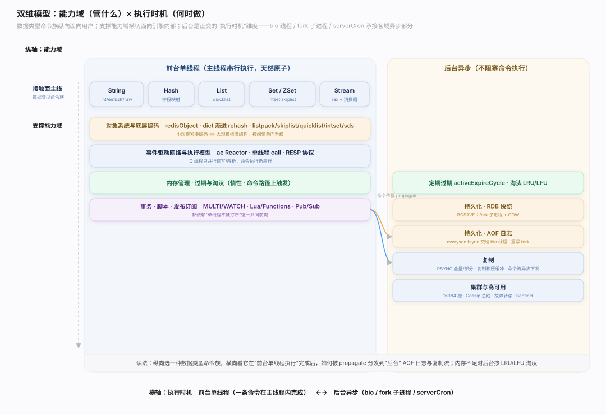
二、总架构：一切都是内存里的 dict，外加两条落盘链路
Redis 的骨架异常简洁：顶层是一个键空间 dict（key → redisObject），value 是五/六种数据类型对象，每种对象按规模选紧凑或标准编码。围绕这个核心 dict，向外是单线程事件循环处理网络与命令，向下是 RDB/AOF 两条持久化链路，横向是复制流与集群总线。
三层归纳：
- 接入层（蓝）：ae 事件循环（Reactor）+ 可选 IO 线程读写解析；RESP 协议编解码；命令表分派。
- 数据层（琥珀）：键空间 dict + 过期 dict；redisObject + 底层编码（sds/listpack/quicklist/intset/skiplist/dict）。
- 保障层（绿/紫）：内存淘汰与过期回收；RDB 快照与 AOF 日志（fork + bio）；复制（PSYNC + backlog）；集群（16384 槽 + Gossip）；Sentinel 高可用。
三、依赖矩阵：接触面 × 能力域
每条接触面命令族在执行时会穿过哪些能力域（●=强依赖，○=弱依赖）。
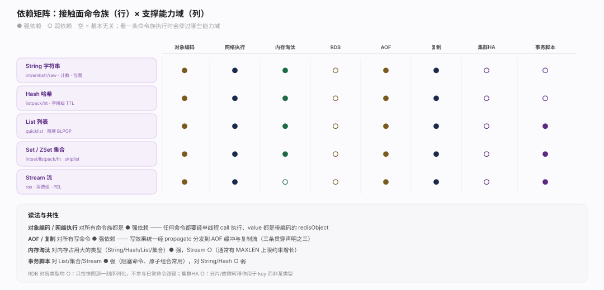
四、主线清单（一级标题锁定，不漂移）
接触面主线 · 数据类型命令族（5）
- String 字符串与位操作 — int/embstr/raw 三编码、INCR、SETRANGE/GETRANGE、Bitmap/位图
- Hash 哈希 — listpack↔hashtable、字段级 TTL（HEXPIRE）
- List 列表 — quicklist（listpack 节点链）、LPUSH/RPOP、阻塞 BLPOP
- Set 与 ZSet 集合与有序集合 — intset/listpack/hashtable；skiplist + listpack、按分/按名/按 rank 查询
- Stream 流与消费组 — radix tree（rax）存储、消费组、PEL 待确认列表
支撑能力域 · 引擎内部（8）
- 对象系统与底层编码 — redisObject、dict 渐进式 rehash、listpack、skiplist、quicklist、intset、sds
- 事件驱动网络与执行模型 — ae Reactor、单线程命令执行、IO 线程、RESP、serverCron
- 内存管理 · 过期与淘汰 — 惰性+定期过期、maxmemory、近似 LRU/LFU、lazyfree
- 持久化 · RDB — 快照、fork/COW、RDB 文件格式、save points
- 持久化 · AOF — 命令追加、appendfsync、AOF 重写、Multi-Part AOF、混合持久化
- 复制 — PSYNC 全量/部分重同步、复制积压缓冲、复制 ID、WAIT
- 集群与高可用 — 16384 哈希槽、Gossip、MOVED/ASK、故障转移、Sentinel
- 事务 · 脚本 · 发布订阅 — MULTI/WATCH（乐观锁）、Lua/Functions、Pub/Sub、键空间通知、阻塞命令
五、三条贯穿声明（全库一致，改一处查三处）
- 单线程执行是 Redis 一致性的根：所有命令在主线程串行执行（IO 线程只并行化读写/解析，不并行执行命令）。因此单命令天然原子、MULTI/EXEC 无需锁、Lua 脚本原子——这些不是各自实现的锁，而是共享同一个"命令不被打断"的前提。
- 一切 value 都是 redisObject + 可切换编码：数据类型是逻辑视图，底层编码（小规模用紧凑连续内存 listpack/intset、大规模用标准结构 hashtable/skiplist）按阈值自动升级且不可逆。编码选择贯穿数据类型主线与对象编码域。
- 持久化/复制都建立在"命令传播"之上：写命令执行后，同一份效果被传播到 AOF 缓冲、复制流。RDB 是时点快照、AOF 是操作日志、复制是把日志实时发给从库——三者共享 propagation 机制而非各写各的。
六、一句话总纲
Redis = 一个单线程事件循环守着一张内存大 dict——value 是按规模自动换编码的数据结构对象，写操作被同一套 propagation 分发给 AOF 日志与复制流，fork 出的子进程负责 RDB 快照与 AOF 重写，内存不够时按近似 LRU/LFU 淘汰。
Redis 原理 · String 字符串
定位：String 是 Redis 最基础的数据类型——一个 key 对应一个二进制安全的值（最大 512MB）。它依赖对象系统的三种编码（int/embstr/raw），是计数器、缓存、位图、分布式锁等模式的载体。
源码：~/workdir/redisunstable @e1cc3dc（2026-07，version.h记 255.255.255）。主文件t_string.c，编码在object.c，位操作在bitops.c。
一、三种编码：int / embstr / raw
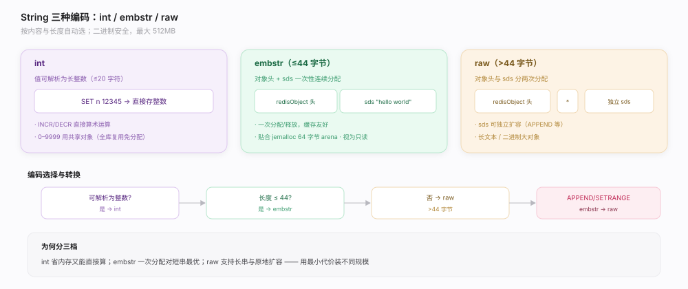
String 的 value 按内容与长度选编码（object.c）：
- int：值能被解析成长整数 → 存整数本身，省内存且
INCR直接算术。0–9999 的小整数用共享对象：OBJ_SHARED_INTEGERS=10000（server.h:127），命中时直接返回shared.integers[value]（object.c:367-368）并标OBJ_ENCODING_INT（object.c:372），全库复用免分配。 - embstr：≤44 字节（
OBJ_ENCODING_EMBSTR_SIZE_LIMIT=44，object.c:337）→createStringObject走连续分配分支（object.c:339-340），对象头与 sds 一次性分配在连续内存（贴合 jemalloc arena），分配/释放各一次、缓存友好。 - raw：>44 字节 →
tryCreateRawStringObject（object.c:346），对象头与 sds 分两次分配，sds 可独立扩容。 - 编码归约：写入时
tryObjectEncoding（object.c:999，实体tryObjectEncodingEx，object.c:939）尝试把可整数化的 raw/embstr 收敛为 int、把长 raw 收缩为 embstr。对 embstr 做修改（如APPEND）会转为 raw（embstr 视为只读优化）。
二、核心命令与原子计数
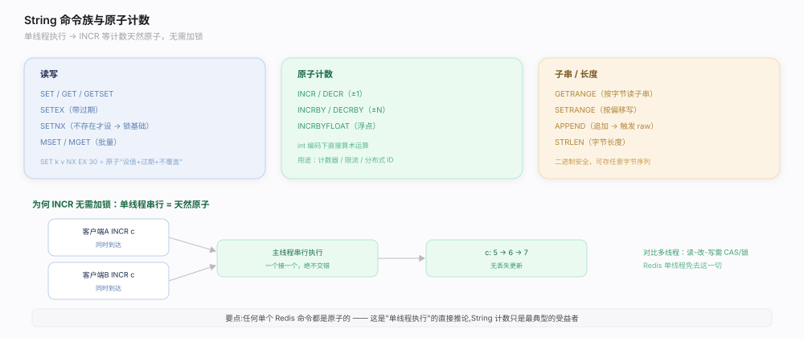
- 读写：
SET（setCommand，t_string.c:435，统一入口setGenericCommand，t_string.c:87）/GET（getCommand，t_string.c:475）/GETSET（getsetCommand，t_string.c:568）/GETEX（getexCommand，t_string.c:499）/SETEX（setexCommand，t_string.c:451）/SETNX（setnxCommand，t_string.c:446，锁的基础）/MSET/MGET（mgetCommand，t_string.c:717；msetGenericCommand，t_string.c:756）。 - 原子计数：
INCR（incrCommand，t_string.c:941）/INCRBY（incrbyCommand，t_string.c:949）/INCRBYFLOAT（incrbyfloatCommand，t_string.c:968）统一走incrDecrCommand（t_string.c:901）——单线程保证无竞争，是计数器、限流、ID 生成的基础。int 编码下直接算术运算。 - 子串：
GETRANGE（getrangeCommand，t_string.c:650）/SETRANGE（setrangeCommand，t_string.c:580，按字节偏移读写）、APPEND（appendCommand，t_string.c:1369，追加、触发 raw）、STRLEN（strlenCommand，t_string.c:1412）。
深化 · Bitmap 位操作
String 可当位数组用（每字节 8 位），用极少内存表示海量布尔状态（如 1 亿用户签到只需 ~12MB）。
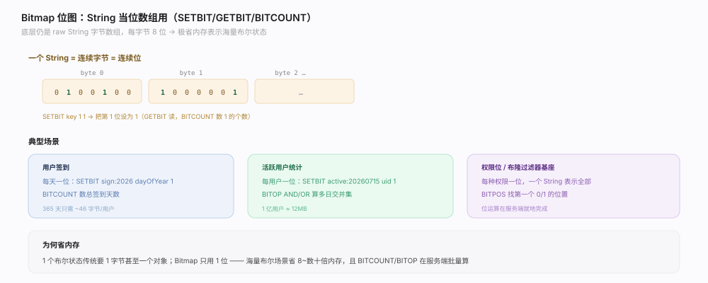
- 底层仍是 String（raw 编码的字节数组），位操作直接改字节的某一位，实现在
bitops.c：SETBIT（setbitCommand，bitops.c:849）/GETBIT（getbitCommand，bitops.c:902）/BITCOUNT（bitcountCommand，bitops.c:1623）/BITOP（bitopCommand，bitops.c:1241）/BITPOS（bitposCommand，bitops.c:1721）。 SETBIT对越界偏移会自动把底层字节串扩容补零，因此稀疏高位写入可能放大内存。- 典型场景：用户签到（每天一位）、活跃统计（
BITCOUNT）、布隆过滤器基座、权限位、多维标签的位运算聚合（BITOP AND/OR）。
调优要点与误区
SETNX+ 过期是简易分布式锁基础，但需注意锁误删（用带唯一值的SET k v NX EX+ Lua 校验删除）。- 误区："String 只能存文本"：二进制安全，可存图片/序列化对象，但大 value（>10KB）建议评估。
- 误区："INCR 需要加锁"：单线程 +
incrDecrCommand（t_string.c:901）天然原子，不需要。 - 误区："频繁 APPEND 高效"：
appendCommand（t_string.c:1369）会把 embstr 转 raw 且可能反复扩容；大量拼接考虑别的结构。 - 误区："BITCOUNT 很轻"：
bitcountCommand（bitops.c:1623）对超大位串是 O(n) 字节扫描，范围参数可限定统计区间。
拓展 · 底层 SDS 与内存分档
raw/embstr 的值体是 SDS（Simple Dynamic String），二进制安全（记录长度而非依赖 \0）。SDS 按字符串长度选不同 header 省内存（sds.h）：sdshdr8（sds.h:32，len<256）/sdshdr16（sds.h:38）/sdshdr32（sds.h:44）/sdshdr64（sds.h:50）分别用 1/2/4/8 字节记 len/alloc；极短串用 SDS_TYPE_5（sds.h:57，长度塞进 flags 高 5 位，无独立 len 字段，注释见 sds.h:26）。这套分档让"存一个 3 字节的 key 值"不必带 16 字节的长度头——是 embstr 连续分配（object.c:339-340）之外的第二层省内存设计。
一句话总纲
String 是二进制安全的单值类型，按内容自动选 int（可算术，0–9999 共享对象）/embstr（≤44B 连续分配）/raw（长串）编码，写入经 tryObjectEncoding 归约；单线程让 INCR 等计数天然原子，还能当 Bitmap 用极少内存表示海量布尔状态。
Redis 原理 · Hash 哈希
定位：Hash 是"key → 字段-值映射"的类型，适合表示对象（如一个用户的多个属性）。它依赖对象系统的两种编码（listpack / hashtable），小规模紧凑、大规模标准。近年新增字段级 TTL（HEXPIRE），并为此引入第三种编码listpackex。
源码：~/workdir/redisunstable @e1cc3dc（2026-07，version.h记 255.255.255）。主文件t_hash.c，编码/阈值实现散落t_hash.c/object.c/config.c。
一、两种编码：listpack ↔ hashtable
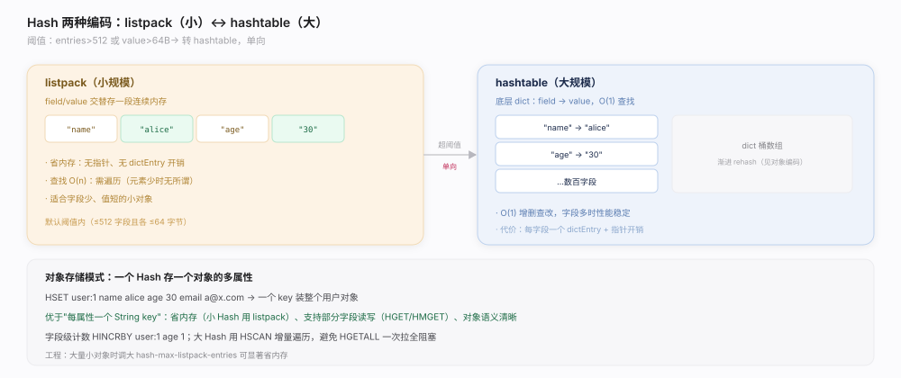
- listpack（小规模）：字段和值按
field1, value1, field2, value2…交替存在一段连续内存里。省内存（无指针/dictEntry 开销），但查找是 O(n) 遍历。 - hashtable（大规模）：底层 dict，字段→值，O(1) 查找。
- 转换阈值：写入前
hashTypeTryConversion（t_hash.c:1537）逐一评估——字段数超hash_max_listpack_entries时hashTypeConvert(..., OBJ_ENCODING_HT)（t_hash.c:1553-1554），或某字段/值字节数超hash_max_listpack_value（单值长度检查见t_hash.c:363）也触发转换。真正执行编码切换的是hashTypeConvert（t_hash.c:3106）。默认值在config.c：hash-max-listpack-entries=512（config.c:3405）、hash-max-listpack-value=64（config.c:3417）。转换单向不可逆。
二、命令与对象存储模式
![Hash 命令与对象存储]()
- 字段写入：
HSET（hsetCommand，t_hash.c:3952）/HSETNX（hsetnxCommand，t_hash.c:3863）；每次写入前都会走hashTypeTryConversion判断是否需要升级编码。 - 字段读取：
HGET（hgetCommand，t_hash.c:4860）/HMGET（hmgetCommand，t_hash.c:4869）/HGETALL（hgetallCommand，t_hash.c:5426）/HDEL（hdelCommand，t_hash.c:5189）。 - 原子计数：
HINCRBY（hincrbyCommand，t_hash.c:4706）/HINCRBYFLOAT（hincrbyfloatCommand，t_hash.c:4763）——字段级计数，如商品库存。 - 随机与扫描：
HRANDFIELD（hrandfieldCommand，t_hash.c:5823）随机取字段；HSCAN（hscanCommand，t_hash.c:5439）游标增量遍历大 Hash，不阻塞。 - 对象存储模式：把一个对象的多个属性存一个 Hash（
user:1→{name, age, email}），比"每属性一个 String key"省内存、支持部分字段读写。
深化 · 字段级 TTL（HEXPIRE）与 listpackex
传统 Redis 过期是 key 级（整个 Hash 一起过期）。较新版本支持字段级 TTL——单独给 Hash 的某个字段设过期。
![字段级 TTL]()
HEXPIRE（hexpireCommand，t_hash.c:6381）/HPEXPIRE（hpexpireCommand，t_hash.c:6376）给指定字段设过期，到点只删该字段而非整个 Hash；二者都汇入统一实现hexpireGenericCommand（前置声明t_hash.c:64）。- 第三种编码
listpackex：一旦给 listpack 编码的 Hash 设字段过期，会转成带过期扩展的OBJ_ENCODING_LISTPACK_EX（转换点t_hash.c:2256、t_hash.c:2261；结构定义见server.h:3933附近，expire_time字段注释server.h:3163）。写过期由hashTypeSetEx族完成（声明t_hash.c:224，配套 init/done 见t_hash.c:221/:226）。 - 用途：会话中不同属性不同有效期、缓存对象的部分字段刷新。
调优要点与误区
hash-max-listpack-entries（默认 512，config.c:3405）/-value（默认 64，config.c:3417）：大量小对象场景可调大阈值省内存，但会拉长 listpack 的 O(n) 查找。- 误区："HGETALL 总是安全"：大 Hash 的
hgetallCommand（t_hash.c:5426）会一次返回全部字段，可能阻塞——用HSCAN（t_hash.c:5439）。 - 误区："Hash 比多个 String key 慢"：小 Hash（listpack）反而更省内存，且对象语义更清晰。
- 误区："字段级 TTL 一直有"：这是较新特性，依赖
listpackex（t_hash.c:2256）等新编码，老版本只有 key 级过期。
拓展 · HFE 的 ebuckets 与主动过期
字段级 TTL 不只是编码问题，还要能主动清理到期字段。Redis 为此引入 ebuckets 数据结构（t_hash.c:16 引入 ebuckets.h）——按到期时间组织字段，支持高效取最近到期项。每个带 HFE 的 Hash 有一份私有 ebuckets（htExpireMetadata，t_hash.c:130），记录该 Hash 内各字段的下一最小到期时间；同时向一份全局 HFE ebuckets 登记（t_hash.c:169-170 说明每次更新字段过期既更新 Hash 私有 ebuckets 也可能更新全局 DS），使后台主动过期循环能跨所有 Hash 找出到期字段清理，而非逐 key 扫描。listpackEx 编码的过期读写辅助集中在 listpackEx functions 区（t_hash.c:1196）。这套设计让"给百万 Hash 的字段各设不同 TTL"仍能被后台高效回收。
一句话总纲
Hash 是字段-值映射，小规模用 listpack（连续内存、省指针开销、O(n)）、超 hash-max-listpack-entries/value 阈值经 hashTypeConvert 转 hashtable（O(1)）；适合把一个对象的多属性存一起支持部分读写与字段级计数，较新版本用 listpackex 编码支持字段级 TTL（HEXPIRE）。
Redis 原理 · List 列表
定位：List 是有序、可重复的元素序列，双端可推可弹，适合队列/栈/消息缓冲。它依赖对象系统的 quicklist 编码（listpack 节点组成的双向链表），并与阻塞命令主线深度结合（BLPOP 等）。
源码：~/workdir/redisunstable @e1cc3dc（2026-07，version.h记 255.255.255）。主文件t_list.c，底层容器quicklist.c，阻塞基座blocked.c。
一、编码：listpack → quicklist
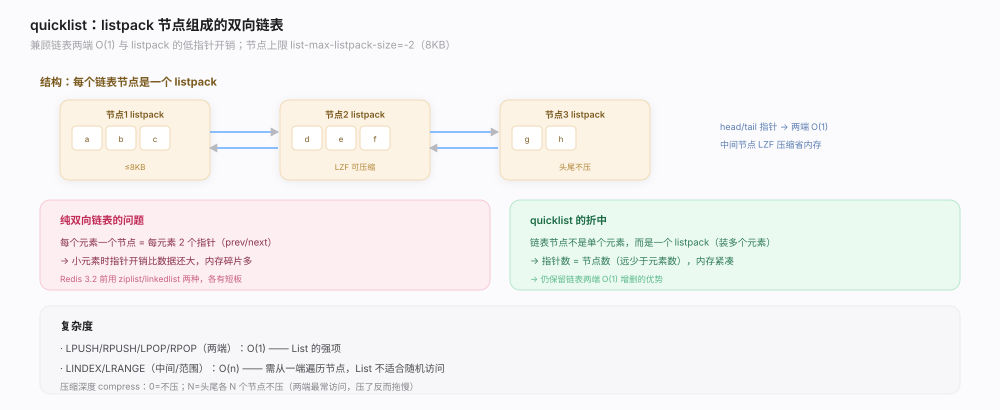
- listpack（小 List）：整个 List 存一段连续内存，节点少、指针零开销。
- quicklist（大 List）：listpack 节点组成的双向链表——既有链表的两端 O(1) 增删，又用 listpack 节点减少指针开销和内存碎片。
- 升/降级：每次追加走
listTypeTryConversionAppend（t_list.c:136），删除后走listTypeTryConversion的收缩分支（t_list.c:130）。真正建 quicklist 时把list_max_listpack_size与list_compress_depth传入quicklistNew（t_list.c:46）。 - 节点大小：
list-max-listpack-size默认 -2（config.c:3323），负值映射为字节上限档位——quicklist.c的optimization_level[] = {4096,8192,16384,32768,65536}（quicklist.c:49），-2 即每节点 8KB；另有硬上限SIZE_SAFETY_LIMIT8192（quicklist.c:69）。超限拆新节点。 - LZF 压缩：中间节点可压缩（
__quicklistCompressNode，quicklist.c:236，内部调lzf_compress，quicklist.c:254；调度入口__quicklistCompress，quicklist.c:332），compress深度留头尾若干节点不压，因两端最常访问。
二、命令：双端队列 / 栈
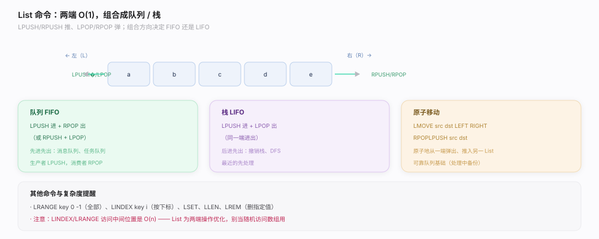
- 两端推入：
LPUSH（lpushCommand，t_list.c:529）/RPUSH（rpushCommand，t_list.c:534）——O(1)。 - 两端弹出：
LPOP（lpopCommand，t_list.c:914）/RPOP（rpopCommand，t_list.c:919）——O(1)。 - 组合语义：
LPUSH+RPOP= 队列（FIFO）；LPUSH+LPOP= 栈（LIFO）。 - 按索引/范围：
LINDEX（lindexCommand，t_list.c:621）/LRANGE（lrangeCommand，t_list.c:924）——注意中间位置是 O(n)。 - 移动：
LMOVE（lmoveCommand，t_list.c:1269）/RPOPLPUSH（rpoplpushCommand，t_list.c:1293）原子地从一个 List 尾弹出、推入另一个头——可靠队列的基础。推入使 List 非空时会signalKeyAsReadyNonEmptyList（如t_list.c:521）通知阻塞的消费者。
深化 · 阻塞消费：BLPOP
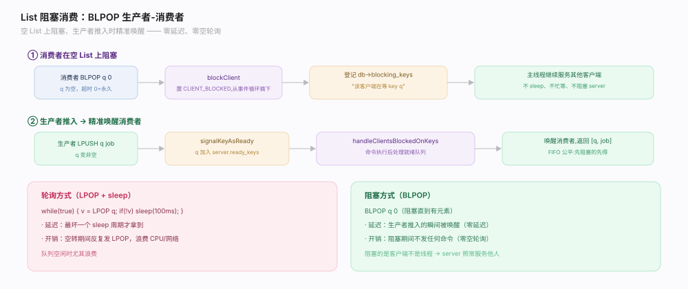
BLPOP/BRPOP/BLMOVE 让消费者在 List 为空时阻塞等待，有元素时被唤醒——生产者-消费者队列的核心。
- 阻塞类命令统一走
blockingPopGenericCommand（t_list.c:1306）：BLPOP（blpopCommand，t_list.c:1375）/BRPOP（brpopCommand，t_list.c:1380）/BLMOVE（blmoveCommand，t_list.c:1406）。 - 空 List 上阻塞 → 调
blockForKeys(c, BLOCKED_LIST, ...)（调用点t_list.c:1371；实现blocked.c:399），把客户端从事件循环摘下，并登记到db->blocking_keys字典（blocked.c:418）。 - 生产者
LPUSH使 List 非空 →signalKeyAsReadyNonEmptyList（t_list.c:521）把 key 排入 ready 列表 → 命令执行后统一由handleClientsBlockedOnKeys（blocked.c:346）唤醒等待的消费者（FIFO 公平）。 - 相比"轮询
LPOP+ sleep"，阻塞方式零延迟、零空轮询开销，且阻塞的是客户端而非服务线程。
调优要点与误区
list-max-listpack-size（默认 -2 = 8KB/节点，config.c:3323）：调节点大小平衡内存与操作粒度；optimization_level（quicklist.c:49）给出各档字节上限。- 误区："List 随机访问快"：
LINDEX/LRANGE中间位置 O(n)，List 是为两端操作优化的，随机访问用别的结构。 - 误区："用 List 做可靠队列很简单"：
RPOPLPUSH/LMOVE（t_list.c:1269）+ 备份队列 + 确认才是可靠模式；但更推荐 Stream（有消费组+确认）。 - 误区："BLPOP 会拖慢 server"：不会，
blockForKeys（blocked.c:399）阻塞的是客户端不是线程。
拓展 · 大元素与 plain 节点
quicklist 节点默认把多个小元素打包进一个 listpack，但单个超大元素会破坏这一优化：isLargeElement（quicklist.c:533）判定元素是否过大（受 packed_threshold，quicklist.c:52，或字节上限约束），过大时该元素独占一个 plain 节点（不打包，直接存裸指针，插入路径见 quicklist.c:546）。节点容量上限由 quicklistNodeLimit（quicklist.c:497）依 list-max-listpack-size 换算成字节/条数双限，并受 sizeMeetsSafetyLimit（quicklist.c:484，即 SIZE_SAFETY_LIMIT 8192）兜底。这解释了"为什么往 List 塞几个巨大的 value 会让内存和压缩收益变差"——它们各自独占 plain 节点、无法被 LZF 压缩打包。
一句话总纲
List 是有序可重复序列，大规模用 quicklist（listpack 节点的双向链表，兼顾两端 O(1) 与低指针开销，中间节点可 LZF 压缩）；LPUSH/RPOP 组合成队列或栈，BLPOP 经 blockForKeys 挂起客户端、由生产者推入时 signalKeyAsReady + handleClientsBlockedOnKeys 精准唤醒——零延迟零空轮询的生产者-消费者模式。
Redis 原理 · Set / ZSet 集合
定位：Set 是无序、去重的元素集合；ZSet（有序集合）在 Set 基础上给每个成员绑一个分数（score），按分数有序。二者依赖对象系统的多档编码（Set: intset/listpack/hashtable；ZSet: listpack/skiplist+dict），是标签、去重、排行榜、延迟队列的核心载体。
源码：~/workdir/redisunstable @e1cc3dc（2026-07）。主文件t_set.c/t_zset.c，阈值默认在config.c，跳表结构在server.h。
一、Set 三档编码：intset / listpack / hashtable
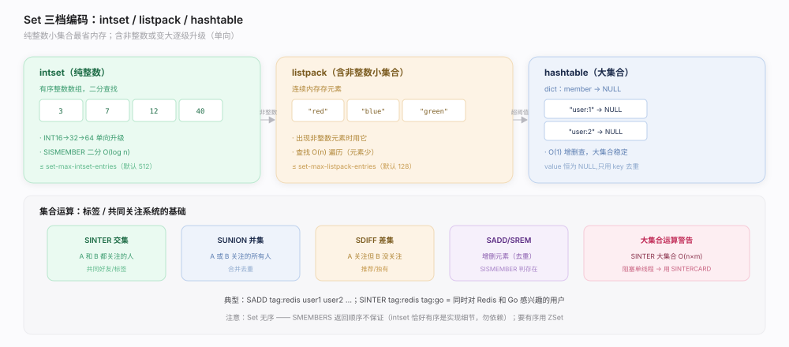
- intset（纯整数小集合）：有序整数数组，
SADD保持有序、SISMEMBER二分查找。INT16→32→64 单向升级。 - listpack（含非整数的小集合）：连续内存存元素。
- hashtable（大集合）：dict（member→NULL），O(1) 增删查。
- 建集合选型：新建时按元素类型与规模预判——纯整数且 ≤
set_max_intset_entries走 intset、否则 ≤set_max_listpack_entries走 listpack（判定见t_set.c:47、t_set.c:49）。写入时setTypeAdd（t_set.c:116）触发按需转换：setTypeMaybeConvert（t_set.c:61）在超阈值时升级，maybeConvertIntset（t_set.c:78）在 intset 混入非整数或超限时转 listpack/hashtable。转换单向不可逆。 - 默认阈值（
config.c）：set-max-intset-entries=512（config.c:3412）、set-max-listpack-entries=128（config.c:3413）、set-max-listpack-value=64B（config.c:3414）。 - 命令：
SADD（saddCommand，t_set.c:626）/SREM（sremCommand，t_set.c:663）/SISMEMBER（sismemberCommand，t_set.c:783）/SCARD（scardCommand，t_set.c:821）/SMEMBERS（smembersCommand，t_set.c:1579）/SPOP（spopCommand，t_set.c:1065）/SRANDMEMBER（srandmemberCommand，t_set.c:1335）；集合运算SINTER（sinterCommand，t_set.c:1574）/SUNION（sunionCommand，t_set.c:1945）/SDIFF（sdiffCommand，t_set.c:1993）——交/并/差，标签系统的基础。
二、ZSet：skiplist + dict 双结构
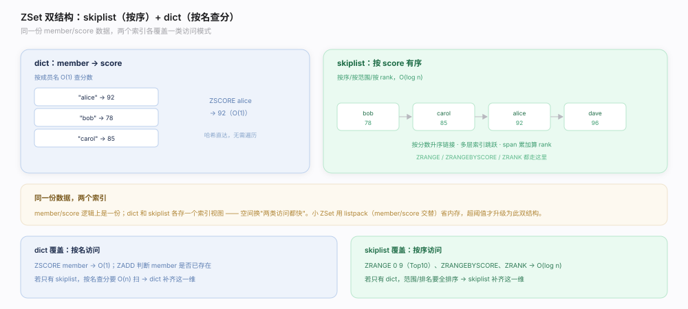
大 ZSet 用 skiplist + dict 组合（zset 结构体 server.h:1816，成员 dict 在 :1817、zsl 在 :1818）：
- dict：
member → score，ZSCORE查分 O(1)（zscoreCommand，t_zset.c:4092）。 - skiplist：按 score 有序的跳表，支持范围查询、按 rank 定位。插入走
zslInsert（t_zset.c:326），按分数/成员求排名走zslGetRank（t_zset.c:645，用 span 累加）。 - 小 ZSet 用 listpack（member/score 交替存），超
zset-max-listpack-entries（默认 128，config.c:3415）或 value >zset-max-listpack-value（默认 64B，config.c:3419）触发zsetConvertAndExpand(..., OBJ_ENCODING_SKIPLIST, ...)（转换点t_zset.c:1659，实现t_zset.c:1444；对外包装zsetConvert，t_zset.c:1439）。 - 为何两个结构：dict 提供 O(1) 按名查分，skiplist 提供 O(log n) 按序/按范围访问——各取所长，互补覆盖 ZSet 的两类访问模式。
深化 · ZSet 的多种查询维度
ZSet 强大在于同一份数据支持多种正交查询维度（命令均在 t_zset.c）：
- 按分数范围：
ZRANGEBYSCORE（zrangebyscoreCommand，t_zset.c:3633，如"分数 60~90"）——skiplist 从 min 起点顺序扫。 - 按排名范围：
ZRANGE（zrangeCommand，t_zset.c:3514，如"前 10 名"）、ZREVRANGE（zrevrangeCommand，t_zset.c:3521，倒序）——用 span 定位 rank。 - 按成员查分/排名：
ZSCORE（O(1) 走 dict，t_zset.c:4092）、ZRANK（zrankCommand，t_zset.c:4183，O(log n) 走 skiplist span）。 - 原子增分：
ZINCRBY（zincrbyCommand，t_zset.c:2103，与ZADD共用zaddGenericCommand，t_zset.c:1962；zaddCommand，t_zset.c:2099）——排行榜实时更新的核心。 - 按字典序：
ZRANGEBYLEX（zrangebylexCommand，t_zset.c:3907，score 全相同时按成员字典序范围查）。 - 弹出极值：
ZPOPMIN/ZPOPMAX（zpopminCommand/zpopmaxCommand，t_zset.c:4393/:4398）——优先级队列。
拓展 · 典型应用
| 场景 | 结构 | 关键命令 |
|---|---|---|
| 标签/关注关系 | Set | SADD/SINTER（共同关注）/SISMEMBER |
| 去重统计 | Set | SADD/SCARD |
| 排行榜 | ZSet | ZADD/ZINCRBY/ZREVRANGE（Top N） |
| 延迟队列 | ZSet | score=执行时间戳，ZRANGEBYSCORE 取到期任务 |
| 优先级队列 | ZSet | score=优先级，ZPOPMIN/ZPOPMAX |
常见误区与工程要点
- 误区："Set 有序"：Set 无序，
SMEMBERS（t_set.c:1579）返回顺序不保证（intset 恰好有序是实现细节，别依赖）。要有序用 ZSet。 - 误区："ZRANGEBYSCORE 大范围很快"：
t_zset.c:3633在范围内元素多时仍要逐个返回 O(n+log n)，配LIMIT分页。 - 误区："SINTER 任意大集合都行"：
sinterCommand（t_set.c:1574）大集合求交是 O(n×m) 级开销，可能长时间阻塞单线程；只要基数用SINTERCARD或预计算。 - 工程点：延迟队列用 ZSet +
ZRANGEBYSCORE now轮询到期项；排行榜用ZINCRBY（t_zset.c:2103）实时更新 +ZREVRANGE（t_zset.c:3521）取榜。
一句话总纲
Set 是去重集合（纯整数用 intset、小集合 listpack、大集合 hashtable，经 setTypeMaybeConvert 单向升级），支持交并差做标签/共同关注；ZSet 用 skiplist（按序/范围/rank，O(log n)，zslInsert/zslGetRank）+ dict（按名查分，O(1)）双结构，同一份数据支持按分数/排名/成员/字典序多维查询，是排行榜、延迟队列、优先级队列的核心。
Redis 原理 · Stream 流
定位：Stream 是 Redis 5.0 引入的 append-only 日志型数据结构，专为消息流/事件溯源设计——它弥补了 Pub/Sub"不持久化、无确认"的短板，提供持久化存储、消费组、消息确认（ACK）。底层用 radix tree（rax）存储，是 Redis 里最接近 Kafka 语义的类型。
源码：~/workdir/redisunstable @e1cc3dc（2026-07）。主文件t_stream.c，底层 rax 见rax.c。
一、Stream 结构：radix tree of listpacks
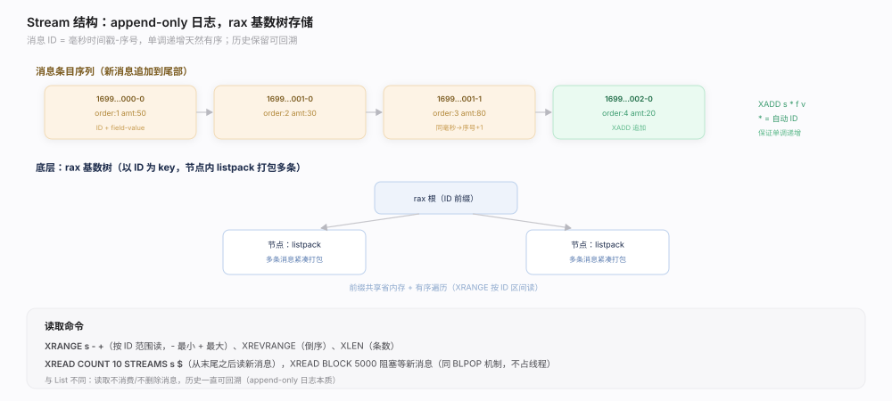
- 消息条目：每条消息有一个 ID（
<毫秒时间戳>-<序号>，如1699000000000-0）+ 一组 field-value 对。ID 单调递增，天然有序；下一 ID 由streamNextID（t_stream.c:170）/streamIncrID（t_stream.c:129）推导。 - 底层编码：
t_stream.c:65明确注明"Low level stream encoding: a radix tree of listpacks"——以消息 ID 为 key 组织 rax（s->rax，创建见t_stream.c:73），同一 rax 节点内多条消息紧凑打包进一个 listpack（用 master entry +STREAM_ITEM_FLAG_SAMEFIELDS复用字段名，t_stream.c:21），兼顾有序遍历与内存效率。 - append-only 追加：
XADD（xaddCommand，t_stream.c:2537）调streamAppendItem（t_stream.c:505）把新条目写入尾部 listpack；ID 可用*自动生成。历史消息保留（不像 List 弹出即消失，也不像 Pub/Sub 阅后即焚）。 - 读命令：
XLEN（xlenCommand，t_stream.c:2762）/XRANGE（xrangeCommand，t_stream.c:2752）/XREVRANGE（xrevrangeCommand，t_stream.c:2757，按 ID 范围读）/XREAD（xreadCommand，t_stream.c:2778，从某 ID 之后读，可BLOCK阻塞等新消息）。
二、消费组：可靠消费与负载均衡
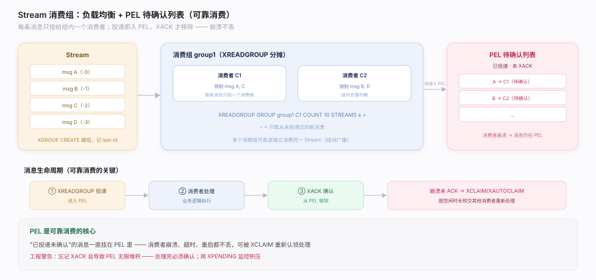
消费组（Consumer Group）是 Stream 相对 Pub/Sub 的核心优势，提供可靠消费 + 组内负载均衡（均在 t_stream.c）：
- XGROUP CREATE（
xgroupCommand，t_stream.c:3553）：建消费组，底层streamCreateCG（t_stream.c:3409）记录该组的消费位点（last-delivered-id）。 - XREADGROUP（并入
xreadCommand，t_stream.c:2778，走消费组分支）：组内多消费者分摊消息——每条消息只投递给组内一个消费者（负载均衡）；消费者按需streamCreateConsumer（t_stream.c:3486）/streamLookupConsumer（t_stream.c:3510）。 - PEL（Pending Entries List）：消息投递后进入 PEL——
streamCreateNACK（t_stream.c:2271）建"未确认"记录，raxTryInsert(group->pel, ...)挂到组级 PEL（t_stream.c:2273），同时挂到consumer->pel（t_stream.c:2140）。记录"已投递未确认"。 - XACK（
xackCommand，t_stream.c:3889）：消费者处理完显式确认，NACK 从组/消费者 PEL 移除。未确认的消息不丢——消费者崩溃后可重新认领。 - XCLAIM / XAUTOCLAIM（
xclaimCommand，t_stream.c:4480；xautoclaimCommand，t_stream.c:4723）：把某消费者长期未确认（超空闲时长）的消息转交其他消费者——故障转移。
一句话：PEL 是可靠消费的关键——"已投递未确认"的消息一直挂在 PEL（t_stream.c:2273）里，消费者崩溃也不丢，可被重新认领处理。
深化 · Stream vs List vs Pub/Sub 做消息
| 维度 | Pub/Sub | List（BLPOP） | Stream |
|---|---|---|---|
| 持久化 | 否（阅后即焚） | 是（在 List 中） | 是（append-only 日志） |
| 历史回溯 | 不能 | 弹出即消失 | 能（XRANGE 任意读历史） |
| 消费确认 | 无 | 无（弹出即"消费"） | 有（XACK + PEL） |
| 消费组/负载均衡 | 无（全员广播） | 需自己实现 | 原生（Consumer Group） |
| 多消费者 | 都收到全量 | 竞争消费 | 组内分摊 + 组间广播 |
| 崩溃恢复 | 消息丢失 | 处理中消息丢失 | PEL 重新认领，不丢 |
- Pub/Sub：实时广播、能容忍丢失的通知。
- List：简单队列、单一消费链路。
- Stream：需要持久化、确认、消费组、历史回溯的可靠消息——最接近 Kafka。
拓展 · 长度控制与内存
- XADD ... MAXLEN ~ N：限制 Stream 长度上限（
~近似修剪，性能更好），防止无限增长吃内存；修剪由streamTrim（t_stream.c:851）执行，XADD尾部顺带触发（t_stream.c:2649）。 - XTRIM：手动修剪（同样汇入
streamTrim，t_stream.c:851）。 - MINID：按最小 ID 修剪（保留某时间点之后的消息）。
- 这是 Stream 在依赖矩阵里对"内存淘汰"只是弱依赖的原因——它通常靠 MAXLEN 自我约束增长。
常见误区与工程要点
- 误区："Stream 和 Pub/Sub 差不多"：本质不同——Stream 持久化 + 确认（
xackCommand，t_stream.c:3889）+ 消费组，Pub/Sub 阅后即焚无确认。要可靠消息选 Stream。 - 误区："Stream 无限存不会有问题"：会吃内存——生产必须配
MAXLEN/MINID修剪（streamTrim，t_stream.c:851）。 - 误区："XREAD 会一直阻塞占线程"：
XREAD BLOCK（t_stream.c:2778）是客户端阻塞（同 BLPOP 机制），不占 server 线程。 - 误区："消息投递就算消费完成"：投递只进 PEL（
t_stream.c:2273），必须 XACK 才算完成；忘记 XACK 会导致 PEL 无限堆积。 - 工程点：消费者崩溃用
XAUTOCLAIM（t_stream.c:4723）转移滞留消息；ID 用*自动生成保证单调递增（streamNextID，t_stream.c:170）；组间广播用多个消费组订阅同一 Stream。
一句话总纲
Stream 是 append-only 日志型结构（rax of listpacks 存储，t_stream.c:65；ID=时间戳-序号 单调有序），XADD→streamAppendItem 追加，提供 Pub/Sub 没有的持久化、历史回溯、消费确认（XACK + PEL 待确认列表 t_stream.c:2273）与消费组（组内负载均衡、崩溃后 XCLAIM/XAUTOCLAIM 重新认领）——是 Redis 里最接近 Kafka 语义、做可靠消息的首选类型。
Redis 原理 · 对象系统与底层编码
定位：本主线是 Redis 数据层的地基——所有数据类型命令族（String/Hash/List/Set/ZSet/Stream）的 value 都是一个redisObject，其ptr指向按规模自动选择的底层编码。它被全部接触面主线依赖，向下依赖内存分配器；编码的"小规模紧凑、大规模标准"策略是 Redis 省内存的核心手段。
源码：~/workdir/redisunstable @9e5614d。
一、redisObject：类型与编码分离
Redis 的键空间是一张 dict：key（sds 字符串）→ redisObject。每个 value 都被 redisObject 包裹，它把逻辑类型（用户看到的 String/Hash/…）与底层编码（内存里真实的表示）解耦：同一种类型可以有多种编码，随数据规模切换。
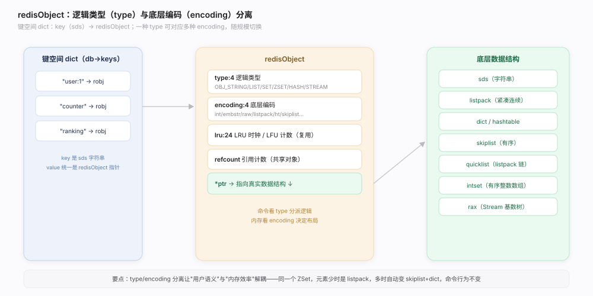
redisObject 的字段（object.h:100-112）：
type:4— 逻辑类型，OBJ_STRING/LIST/SET/ZSET/HASH/STREAM（server.h:862-891）。encoding:4— 底层编码，OBJ_ENCODING_*（object.h:75-88）。lru:24— LRU 时钟或 LFU 计数（复用同一字段，见内存淘汰主线）。refcount— 引用计数（共享对象如小整数用）。ptr— 指向真正的数据结构。
一句话：type 是"用户要什么语义"，encoding 是"引擎当前用什么内存布局装它"——命令看 type 分派，内存看 encoding 决定。
二、八种编码与自动升级阈值
每种类型都有"小规模用紧凑连续内存、大规模用标准结构"两档（或多档）编码，超过阈值单向升级（不会降回，因为降级收益低且抖动大）。
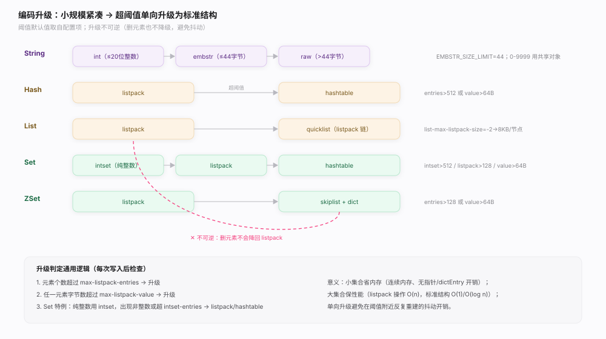
| 类型 | 小规模编码 | 大规模编码 | 升级阈值（默认值，config.c） |
|---|---|---|---|
| String | int（≤20 位可解析整数）/ embstr（≤44 字节） | raw | EMBSTR_SIZE_LIMIT=44（object.c:337） |
| Hash | listpack | hashtable | entries>512 或 value>64B（config.c:3371,3377） |
| List | listpack | quicklist | list-max-listpack-size=-2→8KB/节点（config.c:3293） |
| Set | intset（纯整数）/ listpack | hashtable | intset>512、listpack>128、value>64B（config.c:3372-3374） |
| ZSet | listpack | skiplist | entries>128 或 value>64B（config.c:3375,3379） |
String 三档的细节：内容能被 string2l 解析成长整数（≤20 字符）→ int 编码，且 0–9999 的小整数用共享对象免分配（server.h:126）；否则按长度，≤44 字节用 embstr（对象头与 sds 一次分配、贴合 jemalloc 64 字节 arena），更长用 raw（对象头与 sds 分两次分配）。
深化 · dict 与渐进式 rehash
Redis 的键空间、Hash 的 hashtable 编码、Set 的 hashtable 编码底层都是同一个 dict。它的两个关键设计是渐进式 rehash（避免大表扩容时的长时间停顿）与 dictScan 反向二进制迭代（在 rehash 中也能安全遍历）。
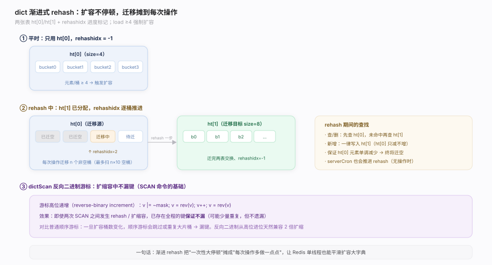
- 两张表 ht[0]/ht[1]（
dict.h:162-178）：平时只用 ht[0]；扩容时分配 ht[1]，rehashidx从 0 开始标记迁移进度，rehashidx==-1表示未在 rehash。 - 渐进迁移（
dict.c:405-431）：每次dictRehash(d, n)只迁移 n 个非空桶（最多扫 n×10 个空桶就返回），迁移分摊到后续每次增删查改和 serverCron；ht[0] 迁空后两表交换、rehashidx=-1。 - 负载因子：
dict_force_resize_ratio=4（dict.c:45）——元素/桶 ≥4 强制扩容，≤1/32 收缩。 - dictScan 反向二进制（
dict.c:1579-1586）：游标高位递增（reverse-binary），保证在两次 SCAN 之间即使发生 rehash/扩缩容，也不漏、不重（可能少量重复但不遗漏已存在的键），这是 SCAN 命令 O(1) 增量遍历的基础。
深化 · listpack：解决 ziplist 级联更新
小规模的 Hash/List/ZSet/Set 都用 listpack（listpack.c）——一段连续内存里紧凑排列多个元素，省去指针开销。它取代了老的 ziplist。
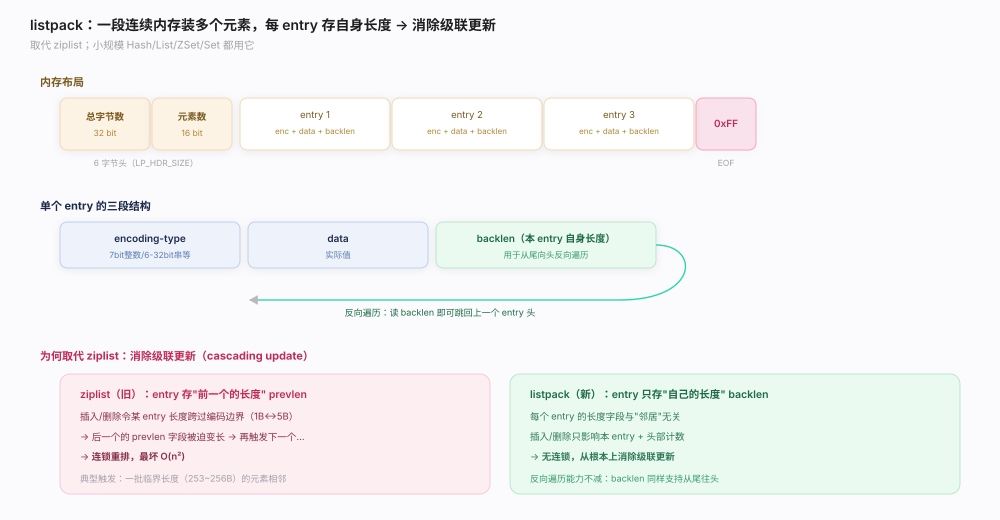
- 布局（
listpack.c:27-90）：6 字节头（32 位总字节数 + 16 位元素数）+ 若干 entry +0xFF结束符。 - 每个 entry =
encoding-type + data + backlen。backlen存的是本 entry 自己的长度，用于反向遍历（从尾往头）。 - 为何取代 ziplist：ziplist 的每个 entry 存的是"前一个 entry 的长度"，插入/删除时若某 entry 长度跨过编码边界，会引发后续 entry 的
prevlen字段连锁变长——级联更新（最坏 O(n²)）。listpack 每个 entry 只存自己的长度，从根本上消除了级联。
深化 · skiplist：ZSet 的按序结构
大规模 ZSet 用 skiplist + dict 组合（server.h:1796）：dict 存 member→score 支持 O(1) 按名查分；skiplist 存按 score 有序的节点，支持范围查询与按 rank 定位。
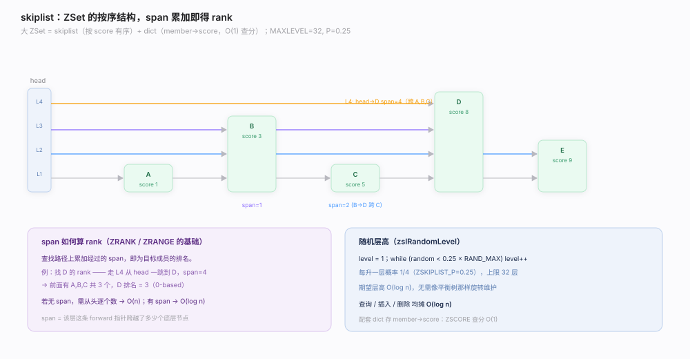
- 节点（
server.h:1777-1787）：score+backward指针 + 变长level[]数组，每层含forward指针和span（到下一节点跨越的节点数）。 - span 算 rank：从头节点沿路径累加 span，即得某成员的排名——这是
ZRANK/ZRANGE的基础。 - 随机层高（
t_zset.c:254-260）：zslRandomLevel用while(random < 0.25*RAND_MAX) level++，即每升一层概率 1/4（ZSKIPLIST_P=0.25），上限ZSKIPLIST_MAXLEVEL=32（server.h:645-646）。期望层高 O(log n)，查询/插入/删除均摊 O(log n)。
拓展 · quicklist / intset / sds
| 结构 | 用途 | 关键设计（源码） |
|---|---|---|
| quicklist | 大 List | listpack 节点的双向链表；节点可 LZF 压缩，compress 深度留头尾若干节点不压（quicklist.h:47-117） |
| intset | 纯整数小 Set | 有序整数数组，INT16→32→64 单向升级；新值超范围则整数组加宽（intset.c） |
| sds | 所有字符串 | sdshdr5/8/16/32/64 五种头，按长度选最窄头省内存；len+alloc+flags+buf，packed 无填充（sds.h:57-62） |
调优要点（关键开关）
hash-max-listpack-entries/-value（默认 512 / 64）：调大让小 Hash 更省内存但操作变慢（listpack 是 O(n)）。set-max-intset-entries（默认 512）/set-max-listpack-entries（默认 128）：控制 Set 三档编码切换点。zset-max-listpack-entries/-value（默认 128 / 64）：ZSet listpack↔skiplist 切换点。list-max-listpack-size（默认 -2 = 8KB/节点）：quicklist 每个 listpack 节点的大小上限。activedefrag（默认 no）：jemalloc 下开启主动碎片整理。
常见误区与工程要点
- 误区："encoding 会随数据变小降回紧凑编码"：不会。编码升级单向，删元素也不降级——避免在阈值附近反复抖动。
- 误区："listpack 一定比 hashtable 省"：只在元素少时成立；元素多时 listpack 的 O(n) 操作和整体重分配反而更贵，故有阈值。
- 误区："SCAN 能拿到一致快照"：SCAN 只保证"全程存在的键不漏"，不保证快照一致——遍历期间新增/删除的键行为未定义，可能重复返回。
- 工程点：大量小 Hash/ZSet 存储场景，适当调大 listpack 阈值可显著省内存（连续内存 vs 每元素一个 dictEntry+robj 的指针开销）。
一句话总纲
每个 value 都是 type/encoding 分离的 redisObject——小规模用 listpack/intset/embstr 等紧凑连续内存、超阈值单向升级为 hashtable/skiplist/quicklist/raw；dict 靠双表渐进式 rehash 把扩容停顿摊平，靠反向二进制游标让 SCAN 在扩缩容中不漏键。
Redis 原理 · 网络与执行模型
定位：本主线是 Redis 的执行骨架——一个 ae 事件循环（Reactor）守着所有连接，命令在主线程串行执行。它被所有接触面命令族依赖，是 Redis"单命令原子、无需锁"的根源。IO 线程只并行化读写与协议解析，不并行执行命令。
源码：~/workdir/redisunstable @9e5614d。注意：此树用 per-thread event loop 的 IO 线程模型（iothread.c），比经典 Redis 6/7 的单io_threads.c更新。
一、ae 事件循环：Reactor 模式
Redis 的心脏是 ae 事件循环（ae.c）——一个单线程 Reactor：注册文件事件（socket 可读/可写）与时间事件（定时任务），用操作系统的多路复用原语等待，事件就绪时回调处理。
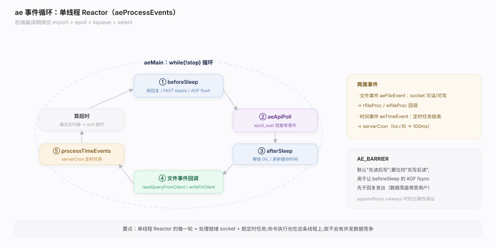
- 多路复用后端（
ae.c:32-42，编译期择优）：evport（Solaris）>epoll（Linux）>kqueue（BSD/macOS）>select（兜底）。 - 主循环
aeMain（ae.c:497）：while(!stop) aeProcessEvents(...)。 aeProcessEvents顺序（ae.c:365-473）：beforeSleep→ 算最近定时器的超时 →aeApiPoll阻塞等事件 →afterSleep→ 触发文件事件回调 →processTimeEvents。- AE_BARRIER：可反转"先读后写"为"先写后读"，用于让
beforeSleep里的 AOF fsync 先于回复发出。
二、单线程命令执行与 call
所有命令的实际执行都在主线程、通过 call（server.c:3958）串行完成——这是 Redis 一致性模型的地基。
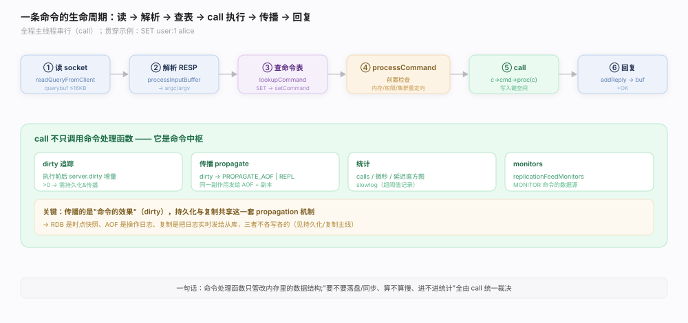
一条命令的生命周期：
- 读：
readQueryFromClient（networking.c:3835）从 socket 读入querybuf（一次最多PROTO_IOBUF_LEN=16KB）。 - 解析：
processInputBuffer（networking.c:3631）按 RESP 协议切成argc/argv；首字节*为 multibulk，否则 inline。 - 查表：
lookupCommand（server.c:3599）用命令名在commandsdict 里查redisCommand（表由commands.def的MAKE_CMD生成）。 - 执行：
processCommand做前置检查（内存、权限、集群重定向）后call(c, CMD_CALL_FULL)→c->cmd->proc(c)（server.c:4024）。 - 回复：结果写入客户端的静态
buf或溢出reply链表。
call 在执行命令前后还做：dirty 追踪（server.dirty 增量→判断是否需持久化/传播）、耗时统计（单调时钟）、slowlog（server.c:4079）、monitors 转发、命令统计（calls/微秒/延迟直方图，server.c:4096）、传播（dirty 则发往 AOF 与副本，server.c:4131-4145）。
一句话：call 是 Redis 的"命令中枢"——不只调用命令处理函数，还负责把这次执行的副作用（dirty）分发给持久化和复制，并计入所有统计。
深化 · IO 线程：并行读写，串行执行
Redis 默认单线程（io-threads=1，config.c:3289）。开启多 IO 线程后，读 socket + 解析协议 + 写回复被分摊到多个 IO 线程，但命令执行仍在主线程串行。
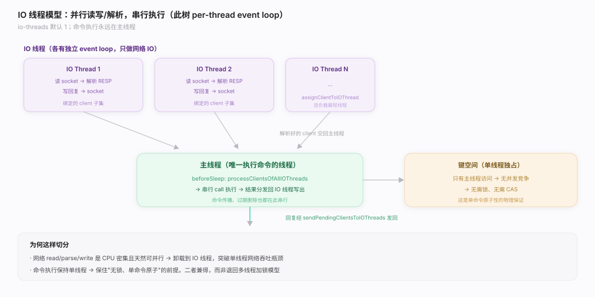
- 此树中每个 IO 线程运行自己的 event loop（
IOThreadMain，iothread.c:860），而非经典 Redis 的"主线程 park、IO 线程 fan-out"。 - 客户端绑定到某个 IO 线程（
client.tid）；accept 时assignClientToIOThread选负载最轻的线程（iothread.c:283）。 - 仍串行的部分：
call、命令传播、过期删除——全在主线程。IO 线程把解析好的客户端交回主线程，主线程在beforeSleep里processClientsOfAllIOThreads处理。 - 老的
io-threads-do-reads配置在此树已废弃（config.c:452）。
为何这样设计：把 CPU 密集但可并行的网络 IO/解析卸载出去，同时保住"命令执行单线程"这个让一切无锁的前提——鱼与熊掌兼得。
深化 · RESP 协议与命令表
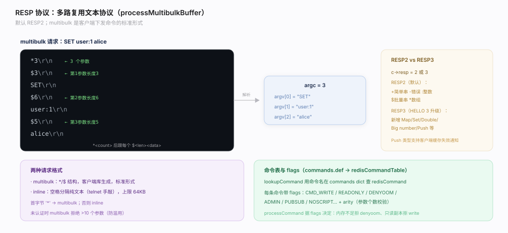
- RESP2/RESP3：
c->resp为 2 或 3，默认 RESP2（config.c:3341）。RESP3 增加了 Map/Set/Double 等类型，用于更丰富的回复。 - multibulk：
*<参数个数>\r\n后跟每个参数$<长度>\r\n<数据>\r\n（processMultibulkBuffer，networking.c:3219）；未认证时拒绝 >10 个参数。 - inline：简单空格分隔命令，上限
PROTO_INLINE_MAX_SIZE=64KB。 - 命令表：
redisCommandTable（server.c:3483）由commands.def生成，每条含 proc/arity/flags（CMD_WRITE/READONLY/DENYOOM…）/key specs。
拓展 · serverCron 周期任务
serverCron（server.c:1557）是时间事件，按 hz 频率触发（默认 hz=10，即 100ms 一次；server.h:118），客户端多时动态翻倍。
| 任务 | 内容 | 源码 |
|---|---|---|
| clientsCron | 客户端超时、缓冲区收缩 | server.c:1253 |
| databasesCron | activeExpireCycle(SLOW)、增量 rehash、dict resize | server.c:1305 |
| 持久化触发 | 检查 save points 触发 BGSAVE、AOF 重写 | server.c:1699-1733 |
| replicationCron | 复制心跳、超时检测 | server.c:1769 |
| 统计 | 每 100ms 采样 ops/sec 等瞬时指标 | server.c:1587 |
此外 beforeSleep（每次事件循环前）还跑一次 FAST expire cycle（server.c:1992）、处理 IO 线程返回的客户端、handleClientsWithPendingWrites 刷回复。
调优要点（关键开关）
io-threads（默认 1）：CPU 多核 + 网络吞吐瓶颈时调到 2~8；命令执行不会因此并行。hz（默认 10）：调高让过期/清理更及时，但增加 CPU 空转；一般不动，用dynamic-hz（默认开）自适应。tcp-backlog/timeout/tcp-keepalive：连接层调优。maxclients（默认 10000）：最大连接数，受ulimit -n制约。
常见误区与工程要点
- 误区："开了 IO 线程，命令就并行了"：不会。IO 线程只并行网络读写/解析，命令执行永远单线程串行。
- 误区："单线程 = 慢"：Redis 瓶颈通常在网络/内存带宽而非 CPU；单线程省去锁开销，配合多路复用可达十万级 QPS。
- 误区："一个慢命令只拖慢自己"：单线程下，一个 O(n) 大命令（如
KEYS *、大SMEMBERS）会阻塞所有其他客户端——这是最常见的线上事故。 - 工程点：避免大 key 上的 O(n) 命令；用
SCAN系列替代KEYS；慢命令进 slowlog 排查。
一句话总纲
一个 ae 事件循环（Reactor）用 epoll/kqueue 多路复用守着所有连接，命令统一经主线程的 call 串行执行——这既是单命令天然原子、无需锁的根源，也意味着任何 O(n) 大命令都会阻塞全局；IO 线程只并行读写与解析，绝不并行执行命令。
Redis 原理 · 内存管理 · 过期与淘汰
定位：本主线管 Redis 作为内存数据库的生死线——键如何过期回收、内存到顶时淘汰谁。它依赖对象系统（LRU/LFU 复用redisObject.lru字段）、被所有写命令间接触发（processCommand前置检查内存）。前台惰性过期在命令路径上，后台定期过期与淘汰不阻塞主流程。
源码：~/workdir/redisunstable @9e5614d。
一、两种过期回收：惰性 + 定期
TTL 键单独存在 db->expires（独立 kvstore，db.c:2753）。Redis 用惰性过期（访问时才删）+ 定期过期（后台采样删）组合，避免"为每个键起定时器"的开销。
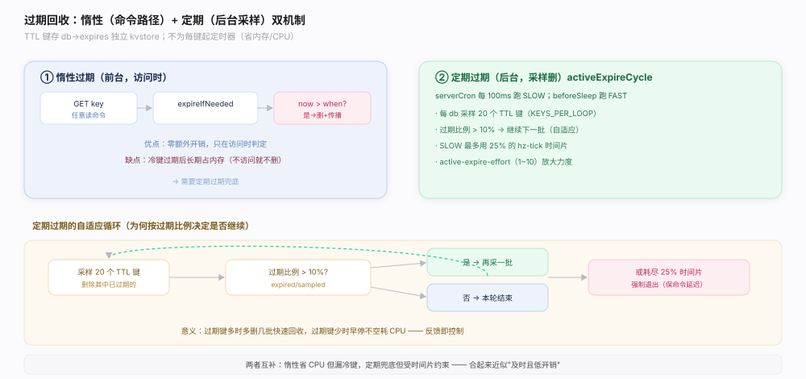
- 惰性过期（
db.c:2944expireIfNeeded）：任何lookupKey访问键时检查now > when（db.c:2886），过期则删除并传播 DEL/UNLINK。省 CPU，但冷键可能长期占内存。 - 定期过期（
expire.cactiveExpireCycle）：serverCron（SLOW，每 100ms）+ beforeSleep（FAST）采样扫描带 TTL 的键。 - 每轮每个 db 采样
ACTIVE_EXPIRE_CYCLE_KEYS_PER_LOOP=20个键（expire.c:96）。 - 自适应重复（
expire.c:447）：若本批过期比例expired*100/sampled > 10%（ACCEPTABLE_STALE），说明过期键还很多，继续下一批；否则停。 - CPU 预算（
expire.c:347）：SLOW cycle 最多用25%的一个 hz-tick 时间片，防止过期扫描拖慢命令。 active-expire-effort（默认 1，可调至 10）放大采样力度。
二、过期在复制下的语义：从库不自行删
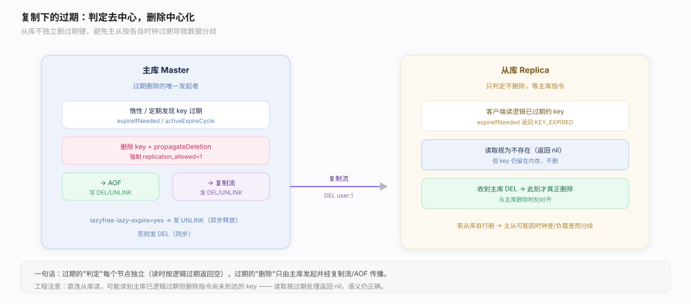
为保证主从数据一致，从库不独立过期键（db.c:2983-2986）：
- 从库上
expireIfNeeded对逻辑过期的键返回KEY_EXPIRED（读取时视为不存在），但不删除，等主库发来 DEL/UNLINK。 - 主库集中删除：
propagateDeletion把 DEL（或 lazyfree 时 UNLINK）发给 AOF 与所有从库（db.c:2863）。 - 这样避免"主从各自按本地时钟过期"导致的数据分歧。
一句话：过期的"判定"在各节点独立（读时视为不存在），但过期的"删除"只由主库发起并传播——判定去中心、删除中心化。
深化 · maxmemory 淘汰：8 种策略
内存到达 maxmemory 时，写命令（DENYOOM 标记）执行前触发 performEvictions（server.c:4608），按策略淘汰键腾空间。默认 noeviction（拒绝写入并报错，config.c:3273）。
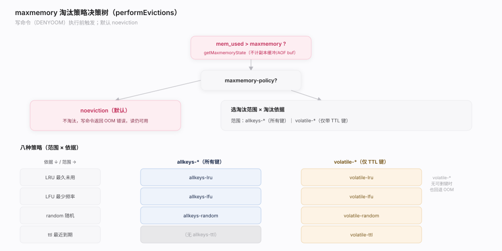
八种策略沿两个维度组合（server.h:692-708）：
- 淘汰范围：
allkeys-*（所有键）vsvolatile-*（仅带 TTL 的键）。 - 淘汰依据：
-lru（最久未用）/-lfu（最少频率）/-random（随机）/volatile-ttl（最近到期）。 - 特例
noeviction：不淘汰，写命令直接返回 OOM 错误。
getMaxmemoryState（evict.c:384）算需释放量：mem_used = zmalloc_used - 不计内存（副本输出缓冲、AOF 缓冲不计，避免淘汰反馈环），mem_tofree = mem_used - maxmemory。
深化 · 近似 LRU 与 LFU
Redis 不维护全局 LRU 链表（太贵），而用采样近似。
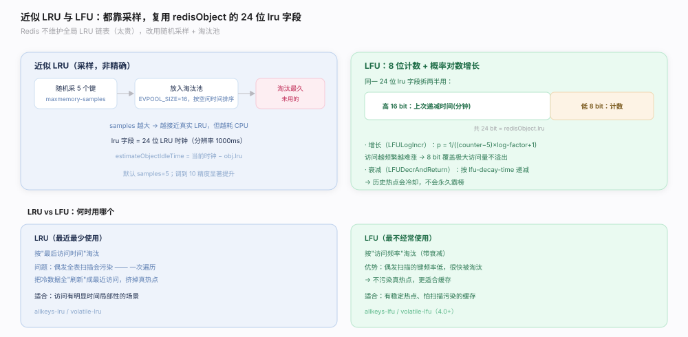
- 近似 LRU：每次从候选中随机采
maxmemory-samples（默认 5，config.c:3304）个键，放入大小 16 的淘汰池（EVPOOL_SIZE=16，evict.c:36）按空闲时间排序，淘汰最久未用的。采样越多越接近真实 LRU，但越耗 CPU。 - LFU：
redisObject.lru（24 bit）拆成 高 16 bit 上次递减时间（分钟）+ 低 8 bit 访问计数。 - 计数用概率对数增长（
LFULogIncr，evict.c:281）：访问越频繁，计数越难涨，8 bit 即可覆盖极大访问量而不溢出。 - 计数随时间衰减（
LFUDecrAndReturn）：按lfu-decay-time（默认 1 分钟）递减，让历史热点冷却。 lfu-log-factor（默认 10）控制对数增长速率。
拓展 · lazyfree 与后台释放
删除大 key（如百万元素的 Hash）若在主线程同步 free，会长时间阻塞。lazyfree 把释放交给 bio 后台线程。
| 配置 | 默认 | 作用 |
|---|---|---|
lazyfree-lazy-eviction | no | 淘汰时异步释放 |
lazyfree-lazy-expire | no | 过期删除时异步释放 |
lazyfree-lazy-server-del | no | DEL 隐式改 UNLINK 语义 |
lazyfree-lazy-user-del | no | 用户 DEL 异步 |
freeObjAsync（lazyfree.c:223）仅当释放代价 free_effort > 64 且 refcount==1 时才交 bio（BIO_LAZY_FREE），否则同步释放（小对象异步反而更慢）。UNLINK = 显式异步删除，DEL = 同步删除。
调优要点（关键开关）
maxmemory（默认 0=无限）：生产必设，留 25%~30% 给复制缓冲/碎片。maxmemory-policy（默认 noeviction）：缓存场景用allkeys-lru/allkeys-lfu；持久化数据用volatile-*或保持 noeviction。maxmemory-samples（默认 5）：调到 10 更接近真实 LRU，CPU 略增。lazyfree-lazy-*+activedefrag：大 key/高碎片场景开启。active-expire-effort（默认 1）：过期键堆积时调高。
常见误区与工程要点
- 误区："TTL 到点键立即消失"：不会。惰性 + 定期是采样删除，冷键可能过期后仍占内存一段时间，直到被访问或被采样到。
- 误区："LRU 是精确的"：Redis 是采样近似 LRU，不是精确全局 LRU；
maxmemory-samples越大越准。 - 误区："从库会自己删过期键"：不会，等主库传播删除；直接读从库可能读到主库已逻辑过期但未及传播的键（读时按逻辑过期处理返回空）。
- 工程点：
DEL大 key 会阻塞主线程，用UNLINK；淘汰反馈环——大量写触发淘汰、淘汰又是写，注意mem_tofree不计副本/AOF 缓冲。
一句话总纲
带 TTL 的键靠"访问时惰性删 + 后台定期采样删（25% 时间片、按过期比例自适应）"回收，从库只判定不删除、等主库传播；内存到顶时按 8 种策略之一淘汰，LRU/LFU 都是采样近似（复用 redisObject 的 24 位 lru 字段），大对象释放交 bio 后台线程避免阻塞。
Redis 原理 · 持久化 · RDB
定位：RDB 是 Redis 的时点快照持久化——把某一刻的全量内存 dump 成一个紧凑二进制文件。它依赖 fork 子进程 + COW（不阻塞主线程），被复制主线复用（全量同步就是发 RDB）。与 AOF（操作日志）互补：RDB 恢复快、文件小，但两次快照间的数据会丢。
源码：~/workdir/redisunstable @9e5614d。
一、SAVE vs BGSAVE：阻塞 vs fork 子进程
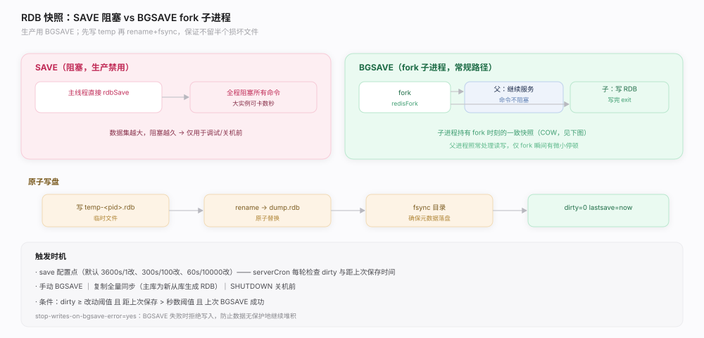
- SAVE（
rdb.c:4825）：主线程直接rdbSave，全程阻塞——生产禁用。 - BGSAVE（
rdb.c:2070rdbSaveBackground）：fork出子进程，子进程用父进程的内存快照写 RDB 后exit，父进程继续服务命令。这是常规路径。 - 写盘原子性（
rdb.c:2032-2055）：先写temp-<pid>.rdb，成功后rename覆盖正式文件 +fsync目录，保证不会留下半个损坏的 RDB。 - 完成后重置
server.dirty=0、server.lastsave=now（rdb.c:2063）。
二、fork 与 Copy-On-Write
BGSAVE 不阻塞的关键是 fork + 操作系统的 Copy-On-Write：子进程与父进程初始共享同一份物理内存页，只有当父进程写某页时，内核才复制那一页。
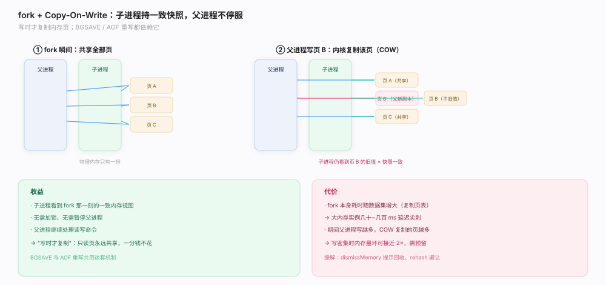
- 子进程看到的是 fork 那一刻的内存快照（一致的时点视图），无需加锁。
- 代价：
fork本身耗时随数据集增大（要复制页表，server.c:7479统计 fork 耗时）；BGSAVE 期间父进程写入越多，COW 复制的页越多，内存占用可能显著上涨（最坏接近 2×）。 - 为减少 COW，子进程 dump 时
dismissMemory提示内核可回收，父进程 rehash 也尽量避让（server.c:1325）。
一句话：fork + COW 用"写时才复制"换来"子进程持有一致快照且父进程不停服"——但写密集期的内存膨胀是它的固有代价。
深化 · RDB 文件格式
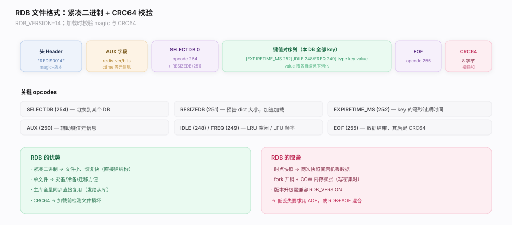
RDB 是紧凑的二进制格式（rdb.c）：
- 头：
REDIS+ 4 位版本号（RDB_VERSION=14，rdb.h:21）。 - AUX 字段：元信息（redis 版本、位数、创建时间等）。
- 每个 DB：
SELECTDBopcode +RESIZEDB（预告 dict 大小，加速加载）+ 键值对。 - 每个键：可选
EXPIRETIME_MS（过期时间）/IDLE（LRU）/FREQ（LFU）前缀 + type + key + value（按编码序列化）。 - opcodes（
rdb.h:97-109）：SELECTDB=254/EXPIRETIME_MS=252/AUX=250/RESIZEDB=251/EOF=255/FREQ=249/IDLE=248。 - 尾：
EOFopcode + 8 字节 CRC64 校验和（rdb.c:1915），加载时校验完整性。
拓展 · 触发时机
| 触发方式 | 说明 | 源码 |
|---|---|---|
save 配置点 | 默认 3600s/1改 300s/100改 60s/10000改 任一满足即 BGSAVE | server.c:2462（默认）/ 1699（检查） |
| 手动 SAVE/BGSAVE | 运维手动触发 | rdb.c:4815,4833 |
| 复制全量同步 | 主库为新从库生成 RDB | 见复制主线 |
| SHUTDOWN | 关机前默认存一次 RDB | server 关闭流程 |
serverCron 每轮检查：dirty >= 改动阈值 && 距上次保存 > 秒数阈值 && 上次 BGSAVE 成功（server.c:1699）。
调优要点（关键开关）
save（默认三档）：改动频繁又能容忍丢几分钟 → 保留；要 RDB 完全关掉写save ""。rdbcompression（默认 yes）：LZF 压缩字符串，省盘但略耗 CPU。rdbchecksum（默认 yes）：CRC64 校验，关掉可略快但失去完整性检测。rdb-del-sync-files/repl-diskless-sync：复制场景下是否走磁盘。stop-writes-on-bgsave-error（默认 yes）：BGSAVE 失败时拒绝写入，防止数据无保护地继续堆积。
常见误区与工程要点
- 误区："BGSAVE 不占内存"：fork + COW 下，写密集期父进程会因 COW 复制大量页，内存可能接近翻倍——需为此预留内存。
- 误区："RDB 是实时的"：RDB 是时点快照，两次快照之间宕机会丢失这段数据；要低丢失用 AOF。
- 误区："fork 很快"：大内存实例 fork 要复制页表，可能有几十~几百毫秒延迟尖刺（
latency里能看到 fork 事件）。 - 工程点：RDB 适合灾备/冷备/主从全量同步；对丢失敏感的场景用 AOF 或 RDB+AOF 混合。
一句话总纲
RDB 是通过 fork 子进程 + Copy-On-Write 拿到一份一致时点内存快照、序列化成带 CRC64 校验的紧凑二进制文件——恢复快、文件小、主库全量同步复用它，代价是写密集期的 COW 内存膨胀与两次快照间的数据丢失窗口。
Redis 原理 · 持久化 · AOF
定位：AOF（Append Only File）是 Redis 的操作日志持久化——把每条写命令追加记录，重启时重放恢复。相比 RDB 的时点快照，AOF 数据丢失更少（最多 1 秒），代价是文件更大、恢复更慢。它复用call的命令传播机制（执行后写日志），fsync 交 bio 后台线程。
源码：~/workdir/redisunstable @9e5614d。此树用 Multi-Part AOF（base + incr + manifest），无经典的aof_rewrite_buf内存差量缓冲。
一、写入链路：执行后追加，三种 fsync 策略
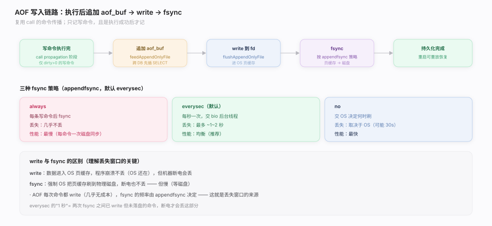
- 追加（
aof.c:1409feedAppendOnlyFile）：命令执行后（在call的 propagation 阶段）把命令追加到内存缓冲aof_buf；跨 DB 时先插一条SELECT。 - 写盘（
aof.c:1147flushAppendOnlyFile）：把aof_bufwrite到 AOF 文件描述符（进入 OS 页缓存）。 - fsync 策略（
appendfsync，默认everysec，config.c:3274）——决定何时把 OS 页缓存真正刷到磁盘：
| 策略 | 行为 | 丢失窗口 | 性能 |
|---|---|---|---|
always | 每条写命令后 fsync | 几乎不丢 | 最慢 |
everysec（默认） | 每秒一次，交 bio 后台线程 | 最多 ~1~2 秒 | 均衡 |
no | 交给 OS 决定何时刷 | 取决于 OS（可能 30s） | 最快 |
二、everysec：fsync 交给 bio 后台线程
![everysec 的后台 fsync]()
everysec 是丢失与性能的平衡点：
- 距上次 fsync ≥1000ms 且当前无进行中的 fsync →
aof_background_fsync提交一个BIO_AOF_FSYNC任务给 bio 线程（aof.c:983,1347）。 - 主线程不等 fsync 完成，继续处理命令。
- 背压：若上一个后台 fsync 还没做完，主线程最多推迟 2000ms 等它；超时则强行 write（不 fsync）并累加
aof_delayed_fsync（aof.c:1186-1204）——磁盘慢时丢失窗口可能扩到 1~2 秒。
一句话：everysec 把"保证落盘"的 fsync 从命令关键路径挪到后台线程，用"最多丢 1 秒"换"命令不被磁盘 IO 拖慢"。
深化 · AOF 重写与 Multi-Part AOF
AOF 会越写越大（同一 key 反复改会留一堆历史命令）。AOF 重写用当前数据集生成一份最小命令集，压缩体积。
- 触发（
aof.c:2867rewriteAppendOnlyFileBackground）：fork子进程，子进程按当前内存写一份紧凑 AOF。 - Multi-Part AOF（此树，
aof.c:74-78）：AOF 不再是单文件，而是appendonlydir/目录下： - base 文件（
.base.rdb或.base.aof）：重写时刻的全量快照。 - incr 文件（
.incr.aof）：base 之后的增量命令。 - manifest 文件（
.manifest）：记录 base 与各 incr 的清单与顺序。 - 父进程如何不丢重写期间的新写入（关键差异）：重写开始时父进程
openNewIncrAofForAppend打开一个新的 incr 文件继续追加（aof.c:2856-2861）——新写入直接落新 incr 文件，不再用经典 Redis 的aof_rewrite_buf内存差量缓冲。子进程写完 base，manifest 更新指向新 base + 新 incr。
深化 · 混合持久化（RDB preamble）
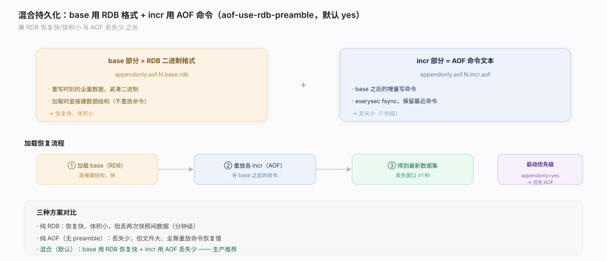
aof-use-rdb-preamble（默认 yes，config.c:3208）让 AOF 的 base 部分用 RDB 二进制格式，incr 部分仍是 AOF 命令文本：
- 加载快：base 是 RDB，直接建结构，比重放大量命令快得多。
- 体积小：RDB 紧凑。
- 丢失少：incr 部分保留最近命令，仍是 1 秒级丢失。
- 兼二者之长：
.base.rdb（RDB 格式全量）+.incr.aof（命令增量）。
启动加载优先级：appendonly=yes 时优先加载 AOF（更新），否则加载 RDB（server.c:7643-7663）。
拓展 · bio 后台线程
bio（Background I/O，bio.c）承接会阻塞主线程的慢 IO：
| 任务类型 | 用途 |
|---|---|
BIO_CLOSE_FILE | 关闭大文件（close 可能慢） |
BIO_AOF_FSYNC | everysec 的 AOF fsync |
BIO_LAZY_FREE | 大对象异步释放（见内存主线） |
调优要点（关键开关）
appendonly（默认 no）：开启 AOF。appendfsync（默认 everysec）：always最安全最慢、everysec均衡、no最快最险。auto-aof-rewrite-percentage（默认 100）/auto-aof-rewrite-min-size（默认 64mb）：自动重写触发条件（比上次大 100% 且超 64MB）。aof-use-rdb-preamble（默认 yes）：混合持久化，建议保持。no-appendfsync-on-rewrite：重写期间是否暂停 fsync（防 fork 子进程与 fsync 争 IO）。
常见误区与工程要点
- 误区："everysec 绝不丢数据"：磁盘慢时后台 fsync 堆积，主线程超时强写，丢失窗口可能到 1~2 秒。
- 误区："AOF 重写会阻塞"：重写在 fork 子进程做，父进程照常写新 incr 文件，不阻塞。
- 误区："这个版本 AOF 重写用内存 diff 缓冲"：不。Multi-Part AOF 让父进程写新 incr 文件，无
aof_rewrite_buf。 - 工程点：RDB+AOF 同开时，重启优先用 AOF 恢复（数据更新）；AOF 目录是
appendonlydir/，别手动删其中文件破坏 manifest。
一句话总纲
AOF 在命令执行后把写命令追加到 aof_buf、按 everysec 交 bio 后台线程 fsync（最多丢 1 秒）；越写越大时 fork 子进程重写成 Multi-Part 结构（RDB 格式 base + AOF 命令 incr + manifest 清单），重写期间父进程直接写新 incr 文件而非内存差量缓冲——恢复时 base 用 RDB 建结构快、incr 重放补最近命令。
Redis 原理 · 复制
定位：复制是 Redis 高可用与读扩展的基础——从库异步复制主库的写命令流，保持数据副本。它复用call的命令传播机制（主库把写效果发给从库），依赖 RDB（全量同步发快照）。复制是异步的：写命令不等从库确认即返回，故主从间有秒级延迟。
源码：~/workdir/redisunstable @e1cc3dc（2026-07；行号以本 commitgrep -n实测）。
一、复制握手与两种同步
从库通过 REPLICAOF <master> 发起复制，走一套握手状态机后进入持续的命令流复制。
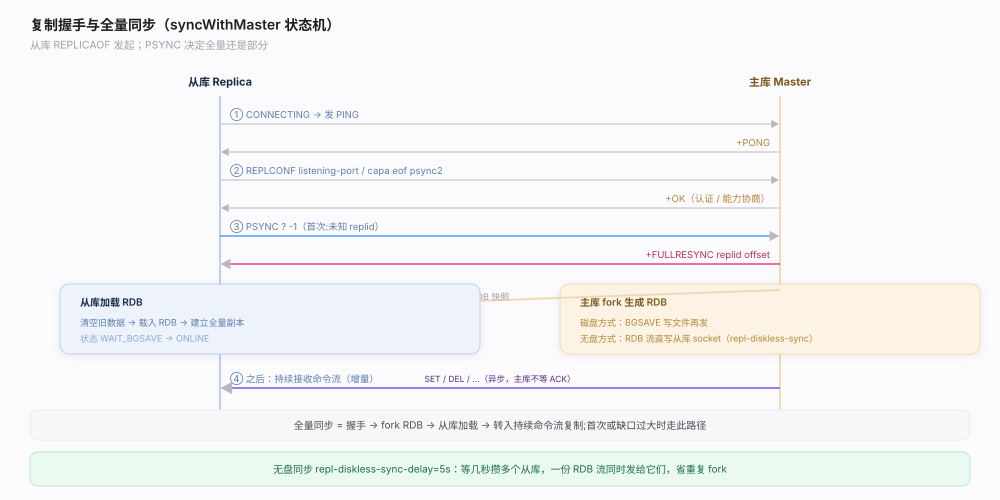
- 握手（
replication.c:3144syncWithMaster状态机）：CONNECTING → 发 PING → 认证 → 发 REPLCONF（replconfCommand，replication.c:1467，宣告端口/能力 eof/psync2）→ 发 PSYNC → CONNECTED。发起端由REPLICAOF命令入口replicaofCommand（replication.c:4491）驱动。 - PSYNC：从库发
PSYNC <replid|?> <offset|-1>，主库据此决定全量还是部分同步。 - 全量同步（
replication.c:1209syncCommand）：主库回+FULLRESYNC <replid> <offset>（replicationSetupSlaveForFullResync，replication.c:947），fork 生成 RDB： - 磁盘方式：BGSAVE 写 RDB 文件再发给从库。
- 无盘方式（
repl-diskless-sync，默认 yes）：直接把 RDB 流写进从库 socket，省一次落盘。 - 部分重同步（PSYNC2）：见下节。
二、部分重同步（PSYNC2）：断线重连不必全量
网络抖动导致从库短暂断连时，若能只补发断连期间的命令，就不必再来一次昂贵的全量同步。
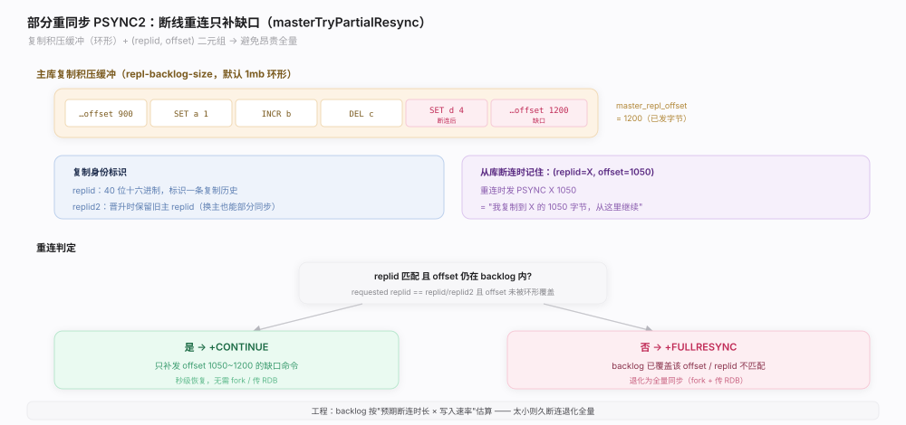
- 复制积压缓冲（
repl-backlog-size，默认 1mb）：主库维护一个环形缓冲，存最近发出的命令流。 - 复制 ID + offset：主库有
replid（40 位十六进制）和master_repl_offset（已发送字节数）。从库记住断连时的 replid 与 offset。 - 重连判定（
replication.c:1007masterTryPartialResynchronization）：从库请求的 replid 匹配主库当前 replid（或 replid2）、且请求的 offset 仍在 backlog 范围内 → 回+CONTINUE，只补发缺失字节（addReplyReplicationBacklog，replication.c:854）；否则+FULLRESYNC全量。backlog 由createReplicationBacklog（replication.c:265）按需创建。 - replid2：主库晋升时保留旧主的 replid，让"级联从库/换主"场景也能部分重同步。
一句话：backlog 环形缓冲 + (replid, offset) 二元组，让"短暂断连"只补发缺口而非重来全量——这是 PSYNC2 的核心。
深化 · 命令传播与一致性模型
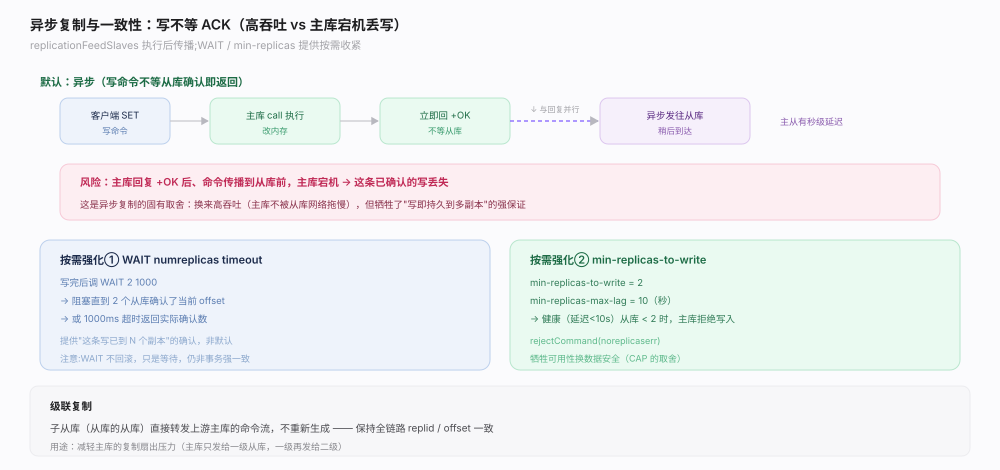
- 异步传播（
replication.c:652replicationFeedSlaves）：主库call执行写命令后，把命令追加进复制流发给所有从库。不等从库 ACK 即返回客户端——这是 Redis 高吞吐的关键，也意味着主库宕机可能丢失尚未传播的写。 - 级联复制：子从库（从库的从库）直接转发上游主库的流，不重新生成，保证 replid/offset 一致。
- WAIT 命令（
waitCommand，replication.c:4895）：WAIT <numreplicas> <timeout>阻塞到指定数量的从库确认了当前 offset——提供按需的同步语义，但不是默认行为。 - min-replicas-to-write（默认 0，
config.c:3350；配套min-replicas-max-lag默认 10s，config.c:3351）：设为 N 后，健康从库少于 N 时主库拒绝写入（写命令前checkGoodReplicasStatus()检查，server.c:4702），牺牲可用性换数据安全。
拓展 · 复制关键配置
| 配置 | 默认 | 作用 |
|---|---|---|
repl-diskless-sync | yes | 全量同步是否走无盘（直接 socket 传 RDB）（config.c:3229） |
repl-diskless-sync-delay | 5s | 无盘同步前等待，攒多个从库一起发（config.c:3333） |
repl-backlog-size | 1mb | 复制积压缓冲大小，决定断连多久内可部分重同步（config.c:3397） |
repl-ping-replica-period | 10s | 主库向从库发 PING 的周期（保活+探测）（config.c:3344） |
min-replicas-to-write | 0 | 健康从库不足时拒写的阈值（config.c:3350） |
min-replicas-max-lag | 10s | 判定从库"健康"的最大延迟（config.c:3351） |
常见误区与工程要点
- 误区："复制是同步的，写完从库就有"：默认异步，主库写完立即返回，从库稍后才收到。强一致需
WAIT。 - 误区："主库宕机不丢数据"：异步复制下，已回复客户端但未传播到从库的写，主库宕机后会丢——用
WAIT或min-replicas-to-write收紧。 - 误区："断线必然全量同步"：只要 backlog 没被覆盖、replid 匹配，断线重连走部分重同步。backlog 太小 + 断线久 → 退化为全量。
- 工程点：backlog 按"断连时长 × 写入速率"估算；无盘同步适合磁盘慢、网络快的环境；从库只读（
replica-read-only，默认 yes，config.c:3241）。
一句话总纲
从库经 PSYNC 握手后异步复制主库的写命令流——首次或缺口过大走 fork RDB 的全量同步，短暂断连靠"复制积压缓冲 + (replid, offset)"部分重同步只补缺口；主库写命令不等从库 ACK 即返回（高吞吐但主库宕机可能丢未传播的写），需要强一致时用 WAIT 或 min-replicas-to-write。
Redis 原理 · 集群与高可用
定位：本主线管 Redis 的横向扩展（Cluster 分片）与故障自愈（Cluster 故障转移 / Sentinel）。Cluster 依赖复制（每个分片是主从）；Sentinel 是不分片场景的高可用方案。二者解决的核心问题：单机内存/吞吐上限，以及主库宕机后的自动切换。
源码：~/workdir/redisunstable @e1cc3dc（2026-07；行号本 commitgrep -n实测）。cluster.c/cluster.h/cluster_legacy.c/sentinel.c。
一、Cluster：16384 哈希槽分片
Redis Cluster 把键空间切成 16384 个哈希槽，分配给多个主节点，实现数据分片与水平扩展。
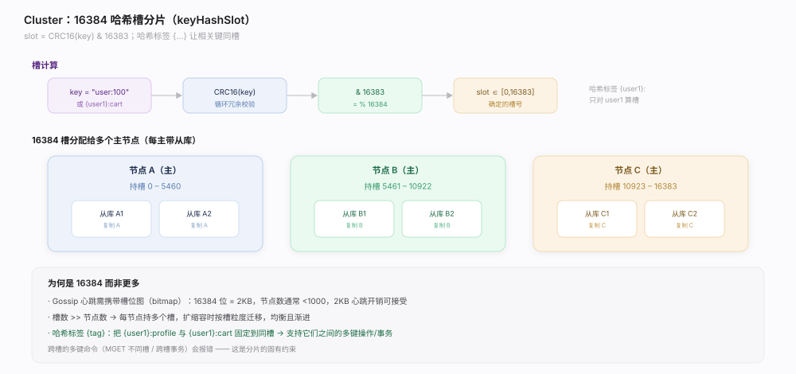
- 槽映射（
keyHashSlot，cluster.h:60定义的 static inline）：slot = CRC16(key) & 16383（即% 16384）；CLUSTER KEYSLOT等路径调它（如cluster.c:1096）。 - 哈希标签：key 含
{...}时只对花括号内子串算槽——让相关 key（如{user1}:profile、{user1}:cart）落同一槽，支持多键操作。 - 槽分配：每个主节点负责一段槽区间（如节点 A 持 0–5460，B 持 5461–10922，C 持 10923–16383）。
- 每个分片是主从：每个主节点带若干从库，主库宕机时从库晋升——分片内复用复制主线的机制。
二、请求路由：MOVED 与 ASK 重定向
客户端可能把命令发到不持有该槽的节点，集群用重定向纠正。
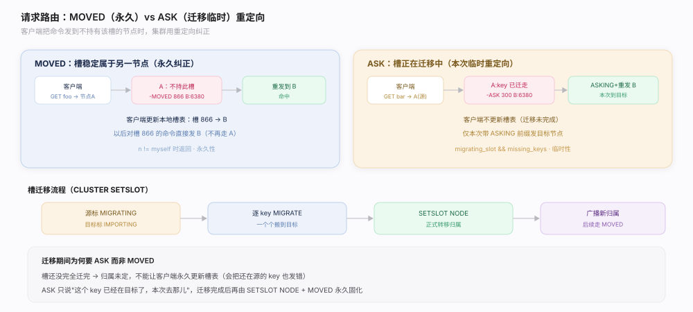
- MOVED（判定入口
getNodeByQuery，cluster.c:1237；CLUSTER_REDIR_MOVED置位cluster.c:1488，回包clusterRedirectClient，cluster.c:1499）：目标槽稳定属于另一节点 → 回-MOVED <slot> <ip:port>，客户端更新本地槽表并重发（永久性纠正）。 - ASK（
CLUSTER_REDIR_ASK置位cluster.c:1444，同经clusterRedirectClient，cluster.c:1499）：槽正在迁移中（MIGRATING/IMPORTING），且 key 已迁到目标节点 → 回-ASK <slot> <ip:port>，客户端本次带ASKING前缀重发到目标（临时性，不更新槽表）。 - TRYAGAIN：迁移中部分 key 尚未就位 → 让客户端稍后重试。
- 槽迁移：
CLUSTER SETSLOT把槽标记为迁移/导入状态，逐 keyMIGRATE，完成后SETSLOT NODE正式转移归属。
深化 · Gossip 协议与故障转移
集群节点间通过 Gossip 协议（集群总线，端口 = 服务端口 + 10000）互相探测、传播状态。
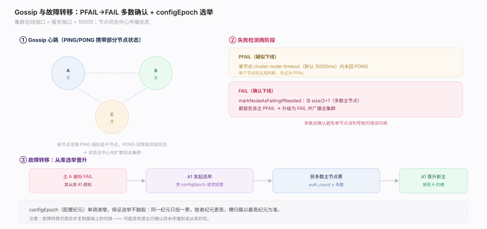
- 消息类型（
cluster_legacy.h:96起）：PING/PONG（心跳，携带部分节点状态）/MEET（加入集群，cluster_legacy.h:98）/FAIL（宣告某节点失败，cluster_legacy.h:99）。收到 Gossip 段由clusterProcessGossipSection（cluster_legacy.c:2120）合并邻居看法。 - 失败检测两阶段：
- PFAIL（疑似下线）：某节点在
cluster-node-timeout（默认 15000ms，config.c:3386）内未回 PONG，标记它 PFAIL。 - FAIL（确认下线）：
markNodeAsFailingIfNeeded（cluster_legacy.c:1913，由 gossip 处理在cluster_legacy.c:2170调用）——当size/2 + 1（多数主节点）都报告某主 PFAIL，升级为 FAIL 并广播。 - 故障转移：主库 FAIL 后，其从库经
clusterHandleSlaveFailover（cluster_legacy.c:4358）发起选举，凭configEpoch争取多数主节点投票（failover_auth_count >= 多数），胜者晋升为新主、接管槽。
一句话：Gossip 让状态去中心地传播，PFAIL→FAIL 的多数派确认避免误判，configEpoch 保证故障转移选举不脑裂。
拓展 · Sentinel：不分片的高可用
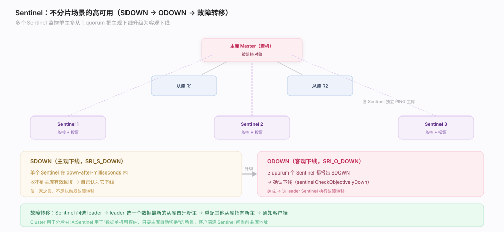
Sentinel（哨兵，sentinel.c）用于单主多从、不分片场景的高可用：
- 监控：多个 Sentinel 进程监控主从，定期 PING。
- SDOWN（主观下线）（标志
SRI_S_DOWN，sentinel.c:47；检测sentinelCheckSubjectivelyDown，sentinel.c:4580）：单个 Sentinel 认为主库不可达。 - ODOWN（客观下线）（标志
SRI_O_DOWN，sentinel.c:48；判定sentinelCheckObjectivelyDown，sentinel.c:4654）：达到quorum个 Sentinel 都认为主库 SDOWN → 确认下线，随后sentinelStartFailover（sentinel.c:4053调用）择优（sentinelSelectSlave，sentinel.c:4047）晋升。 - 故障转移：Sentinel 间选举一个 leader，由它选一个从库晋升为新主，重配其他从库指向新主，并通知客户端。
| 维度 | Cluster | Sentinel |
|---|---|---|
| 分片 | 是（16384 槽） | 否（单主多从） |
| 扩展 | 水平扩展容量+吞吐 | 只做高可用 |
| 客户端 | 需支持 MOVED/ASK | 透明（连 Sentinel 问主库地址） |
| 适用 | 大数据量、高吞吐 | 数据量单机可容纳、只要 HA |
调优要点（关键开关）
cluster-enabled（默认 no，不可改）：启用集群模式。cluster-node-timeout（默认 15000ms，config.c:3386）：失败检测超时，太小易误判、太大切换慢。cluster-require-full-coverage（默认 yes，config.c:3233）：任一槽无主时是否整个集群停止服务。cluster-enabled（默认 no，config.c:3246，不可运行时改）：是否以集群模式启动。cluster-replica-validity-factor（默认 10，config.c:3322）：从库数据太旧时不参与晋升的判定因子。cluster-replica-validity-factor：从库晋升的数据新鲜度门槛。- Sentinel：
quorum（判 ODOWN 的票数）、down-after-milliseconds、failover-timeout。
常见误区与工程要点
- 误区："Cluster 支持任意多键操作"：跨槽的多键命令（MGET/事务/Lua）会报错，除非用哈希标签
{}让相关 key 同槽。 - 误区："MOVED 和 ASK 一样"：MOVED 是永久归属变更（更新槽表），ASK 是迁移期临时重定向（不更新槽表，仅本次）。
- 误区："Cluster 有强一致"：仍是异步复制，故障转移可能丢失未传播的写；
cluster-node-timeout内的分区也可能丢写。 - 误区："Sentinel 能分片"：不能，Sentinel 只做故障转移；要分片用 Cluster。
- 工程点：
cluster-node-timeout权衡误判与切换速度；生产每个分片至少 1 主 1 从；客户端用支持 Cluster 的库自动处理重定向。
一句话总纲
Cluster 把键空间切成 16384 个哈希槽分给多个主节点（CRC16(key)&16383，哈希标签让相关键同槽），客户端按 MOVED（永久）/ASK（迁移临时）重定向路由；节点间用 Gossip 心跳，某主经"多数主节点确认 PFAIL→FAIL"后触发从库按 configEpoch 选举晋升；不分片只需高可用时用 Sentinel，靠 quorum 把 SDOWN 升级为 ODOWN 再故障转移。
Redis 原理 · 事务 · 脚本 · 发布订阅
定位：本主线是建立在"单线程串行执行"之上的一组组合命令能力——事务（MULTI/WATCH）、Lua 脚本/Functions、发布订阅、键空间通知、阻塞命令。它们不各自实现锁，而是共享"命令不被打断"这一前提。依赖网络与执行主线（call/单线程），被上层业务模式广泛使用。
源码：~/workdir/redisunstable @9e5614d。
一、事务：MULTI/EXEC/WATCH
Redis 事务把多条命令打包，EXEC 时在单线程里连续执行、不被其他客户端插入。
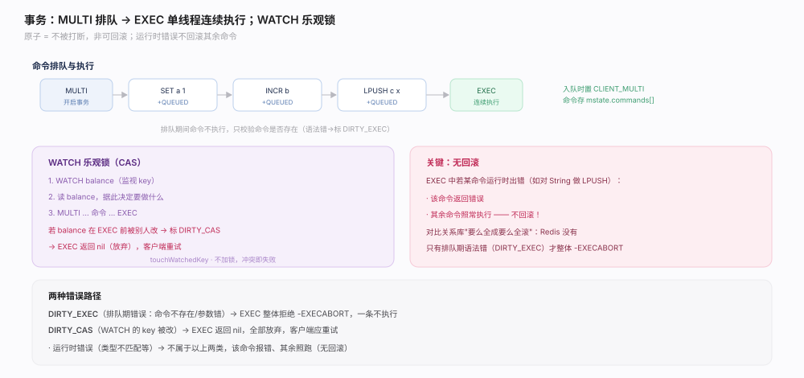
- 命令排队（
multi.c:35queueMultiCommand）：MULTI后（客户端置CLIENT_MULTI标记，server.h:380），命令不立即执行而是入队mstate.commands，返回+QUEUED。 - EXEC 执行：单线程连续
call所有排队命令，期间不处理其他客户端命令——原子（不被打断）。 - WATCH 乐观锁（CAS）（
multi.c:387touchWatchedKey）：WATCH key后，若该 key 在 EXEC 前被任何客户端修改，该客户端被标CLIENT_DIRTY_CAS，EXEC 返回nil（放弃执行）。 - 无回滚：EXEC 中某条命令运行时出错（如对 String 做
LPUSH），其余命令照常执行，不回滚。只有排队期语法错（CLIENT_DIRTY_EXEC）才整体-EXECABORT拒绝。
一句话：Redis 事务的"原子"= 单线程连续执行不被打断，不是关系库的"要么全成要么全滚"——它没有回滚。
二、Lua 脚本与 Functions
脚本让多条命令在服务端原子执行，省去多次网络往返，且能做条件逻辑。
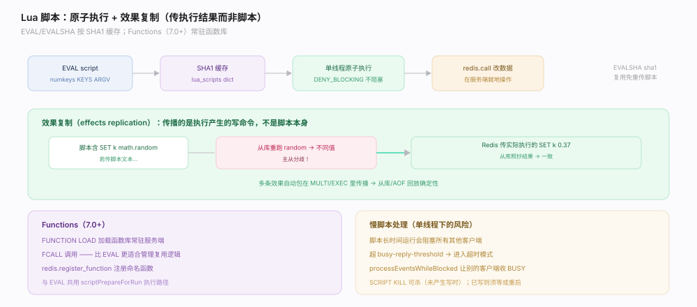
- EVAL/EVALSHA（
eval.c:552）：EVAL <script> <numkeys> key... arg...执行 Lua；脚本按 SHA1 缓存（lua_scriptsdict），EVALSHA <sha1>复用免重传。 - 原子性：脚本像 MULTI 一样单线程执行、不被打断；执行期间设
CLIENT_DENY_BLOCKING（脚本内命令不阻塞）。 - 效果复制（
script.c:681）：脚本传播给 AOF/从库的是执行产生的实际写命令（而非脚本本身）——保证从库/回放确定性（脚本若含随机/时间会不一致）。多条效果自动包在 MULTI/EXEC 里传播。 - Functions（7.0+，
functions.c:1044）：FUNCTION LOAD加载函数库常驻服务端，FCALL调用——比 EVAL 更适合管理复用逻辑。 - 慢脚本：超
busy-reply-threshold进入超时模式，processEventsWhileBlocked让其他客户端能收到 BUSY 错误、可SCRIPT KILL（未写时）。
深化 · 发布订阅与键空间通知
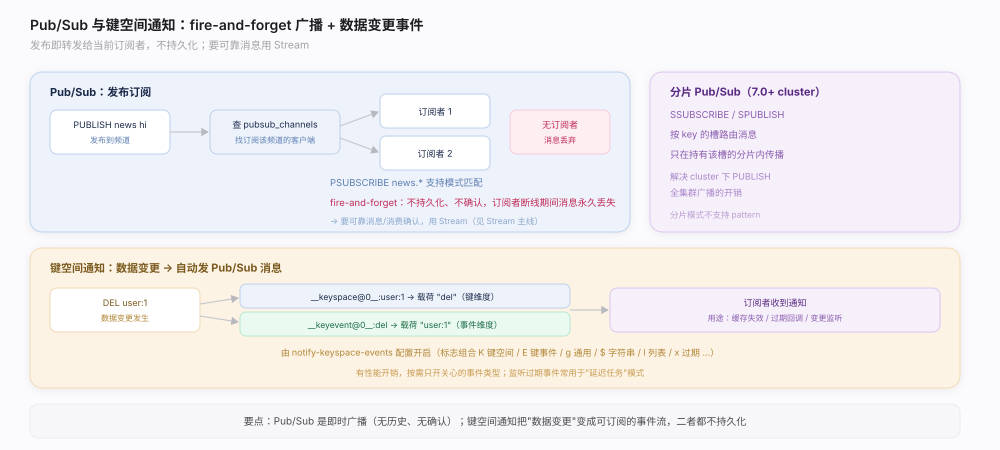
- Pub/Sub（
pubsub.c）：SUBSCRIBE channel/PUBLISH channel msg——发布即转发给当前订阅者，fire-and-forget，不持久化（无订阅者则消息丢弃）。PSUBSCRIBE支持模式匹配（news.*）。 - 分片 Pub/Sub（7.0+ cluster，
pubsub.c:721）：SSUBSCRIBE/SPUBLISH按 key 的槽路由，消息只在持有该槽的分片内传播（解决 cluster 下 PUBLISH 全集群广播的开销）；分片模式不支持 pattern。 - 键空间通知（
notify.c:276）：数据变更时向__keyspace@<db>__:<key>（载荷=事件名）和__keyevent@<db>__:<event>（载荷=key）发通知，由notify-keyspace-events配置开启（标志 K/E/g/$/l/s/h/z/x/e/t…）。用途：缓存失效、过期监听。
深化 · 阻塞命令
BLPOP/BRPOP/BLMOVE/WAIT/XREAD BLOCK 等在条件不满足时阻塞客户端，条件满足时被唤醒——单线程下如何不阻塞整个 server？
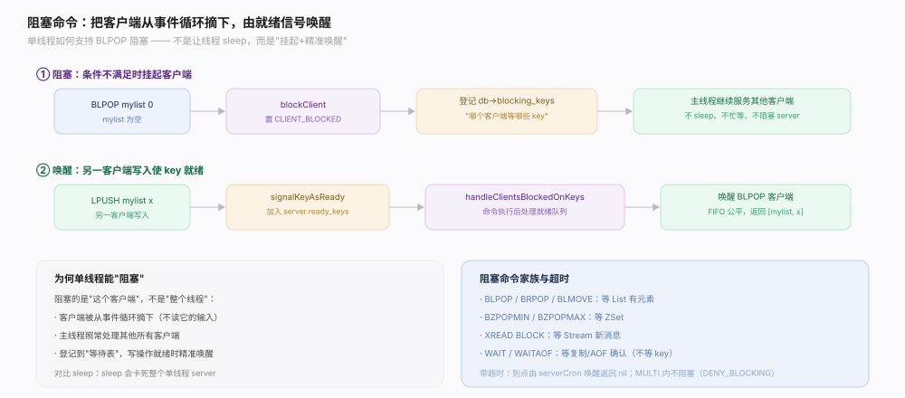
- 阻塞而非忙等（
blocked.c:74blockClient）：客户端置CLIENT_BLOCKED，从事件循环"摘下"（不再处理它的输入），主线程继续服务其他客户端。 - 就绪唤醒（
blocked.c:346）：blockForKeys把"客户端等哪些 key"登记到db->blocking_keys；当有LPUSH等写入使某 key 就绪，signalKeyAsReady把它加入server.ready_keys；命令执行后handleClientsBlockedOnKeys唤醒等待该 key 的客户端（FIFO 公平）。 - 超时：阻塞带超时，到点由 serverCron 检查唤醒并返回 nil。
一句话：阻塞命令不是让线程 sleep，而是把客户端从事件循环摘下、登记到"等待表"，由后续写操作的就绪信号精准唤醒——单线程照样支持阻塞语义。
拓展 · 能力对比
| 能力 | 原子性来源 | 能否条件逻辑 | 典型用途 |
|---|---|---|---|
| MULTI/EXEC | 单线程连续执行 | 否（WATCH 做 CAS） | 简单打包、乐观锁 |
| Lua/Functions | 单线程连续执行 | 是（脚本逻辑） | 复杂原子操作、减往返 |
| Pub/Sub | — | — | 消息广播、事件通知 |
| 键空间通知 | — | — | 缓存失效、过期回调 |
| 阻塞命令 | — | — | 队列消费、生产者-消费者 |
常见误区与工程要点
- 误区："Redis 事务能回滚"：不能。运行时错误不回滚其余命令，只有排队期错误整体拒绝。
- 误区："脚本传的是脚本文本"：默认传效果（实际写命令），不是脚本——所以脚本里用随机/时间不影响从库一致性。
- 误区："Pub/Sub 消息可靠"：不持久化、不确认，订阅者断线期间的消息永久丢失；要可靠消息用 Stream。
- 误区："WATCH 是悲观锁"：是乐观锁（CAS）——不加锁，冲突时 EXEC 失败让你重试。
- 工程点：cluster 下 PUBLISH 全集群广播开销大，用分片 Pub/Sub；键空间通知有性能开销，按需开启特定事件类型。
一句话总纲
事务（MULTI 排队 + EXEC 单线程连续执行，WATCH 提供乐观锁，无回滚）、Lua/Functions（原子执行且传播的是执行效果而非脚本）、Pub/Sub（fire-and-forget 不持久化）、键空间通知、阻塞命令（把客户端从事件循环摘下、由就绪信号唤醒）——全都建立在"单线程串行、命令不被打断"这一共同前提上，而非各自加锁。